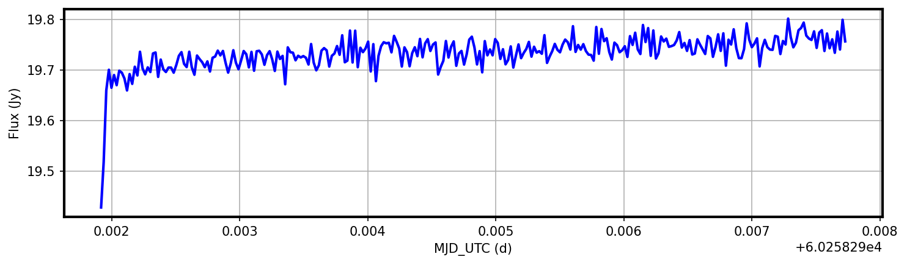
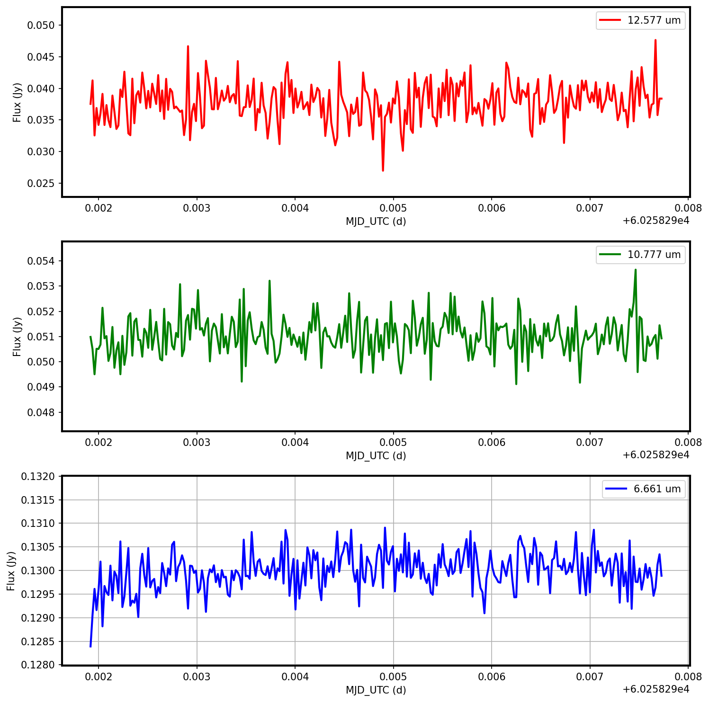

MIRI LRS Slitless Mode TSO Pipeline Notebook#
Authors: Ian Wong; MIRI branch
Last Updated: December 10, 2025
Pipeline Version: 1.20.2 (Build 12.1)
Purpose:
This notebook provides a framework for processing generic Mid-Infrared
Instrument (MIRI) Low Resolution Spectroscopy (LRS) slitless mode time series observations (TSO) data through all
three James Webb Space Telescope (JWST) pipeline stages. The data are assumed
to be located in the observation directory located in the path set up below.
It should not be necessary to edit any cells other than in the Configuration section unless modifying the standard pipeline processing options.
A significant portion of the data processing workflow for LRS slitless TSOs is identical to the methods used to process (non-TSO) LRS slit mode observations, and much of this notebook mirrors the corresponding steps shown in the MIRI slit mode notebook.
Data:
This example is set up to use observations of the A-type standard star HD 2811, which were obtained as part of the Cycle 2 JWST flux calibration campaign by Proposal ID (PID) 4496 Observations 4 and 5. The first of these observations is of the target, while the second is a linked dedicated background observation that will be used to remove the background flux contribution from the target exposures. No dithering is carried out for standard LRS slitless mode observations. It is common for LRS slitless TSOs to lack dedicated background observations, and this notebook allows for the user to turn off the background subtraction step. The example uncalibrated data will be downloaded automatically unless disabled (i.e., to run with user-supplied local files instead).
Most TSOs consist of a long series of integrations, sometimes lasting more than 10 hours, and are designed to capture transient events (e.g., exoplanet transits, phase curves). This example uses a shorter observation in order to facilitate quick execution of the full data processing workflow, while demonstrating the basic functionality of the JWST pipeline for TSOs.
JWST pipeline version and CRDS context:
This notebook was written for the above-specified pipeline version and associated build context for this version of the JWST Calibration Pipeline. Information about this and other contexts can be found in the JWST Calibration Reference Data System (CRDS server). If you use different pipeline versions, please refer to the table here to determine what context to use. To learn more about the differences for the pipeline, read the relevant documentation.
Please note that pipeline software development is a continuous process, so results in some cases may be slightly different if a subsequent version is used. For optimal results, users are strongly encouraged to reprocess their data using the most recent pipeline version and associated CRDS context, taking advantage of bug fixes and algorithm improvements. Any known issues for this build are noted in the notebook.
Updates:
This notebook is regularly updated as improvements are made to the
pipeline. Find the most up to date version of this notebook at:
https://github.com/spacetelescope/jwst-pipeline-notebooks/
Recent Changes:
Feb 1 2025: Notebook created.
May 5, 2025: Updated to jwst 1.18.0 (no significant changes)
July 16, 2025: Updated to jwst 1.19.1 (update plotting to work with new spectral data table format)
December 10, 2025: Updated to jwst 1.20.2 (no significant updates)
Table of Contents#
1.-Configuration#
Install dependencies#
To make sure that the pipeline version is compatabile with this notebook and the required dependencies and packages are installed,
it is recommended that users create a new dedicated conda environment and install the provided
requirements.txt file before starting this notebook:
conda create -n lrs_demo python=3.11
conda activate lrs_demo
pip install -r requirements.txt
Set run parameters#
Set basic parameters to use with the notebook. These will affect what observation is used, where the uncalibrated data are located (if already on disk), which pipeline modules to run on the data, and whether background subtraction is carried out. The list of parameters are:
Set the basic parameters to configure the notebook. These parameters determine what data gets used and where the data is located (if already on disk). The list of parameters includes:
demo_mode:Determines what data is used in the notebook.
Directories with data:
sci_dir: Directory where science observation data is stored.bkg_dir: Directory where background observation data is stored.
pipeline modules:
do_det1 = Trueruns the Detector1 module on the selected data.do_spec2 = Trueruns calwebb_spec2 module on the selected data.do_tso3 = Trueruns calwebb_tso3 module on the selected data.do_viz = TrueCreates plots to visualize calwebb_tso3 results.
bkg_sub:
bkg_data = Trueset to False if not carrying out background substractionbkg_sub = Trueinstructs the pipeline whether to carry out dedicated background subtraction.
# Basic import necessary for configuration
import os
demo_mode must be set appropriately below.
Set demo_mode = True to run in demonstration mode. In this mode, this
notebook will download the example data from the
Barbara A. Mikulski Archive for Space Telescopes (MAST) and process them through the pipeline.
All input and output data will be stored in the local directory unless modified
in Section 3 below.
Set demo_mode = False to process user-specified data that have already
been downloaded and provide the location of the data.
# Set parameters for demo_mode, data directory, and processing steps
# -----------------------------Demo Mode---------------------------------
demo_mode = True
if demo_mode:
print('Running in demonstration mode using online example data!')
# --------------------------User Mode Directories------------------------
# If demo_mode = False, look for user data in these paths
if not demo_mode:
# Set directory paths for processing specific data; these will need
# to be changed to the user's local directory setup (paths below are given as
# examples).
basedir = os.path.join(os.getcwd(), 'lrs_tso_demo_data')
# Point to where the observation data are stored.
# Assumes uncalibrated data in sci_dir/uncal/ and bkg_dir/uncal/, with the results stored in stage1,
# stage2, stage3 directories.
sci_dir = os.path.join(basedir, 'PID04496Obs004/')
bkg_dir = os.path.join(basedir, 'PID04496Obs005/')
# --------------------------Set Processing Steps--------------------------
# Individual pipeline stages can be turned on/off here. Note that a later
# stage won't be able to run unless data products have already been
# produced from the prior stage.
# Pipeline processing
do_det1 = True # calwebb_detector1
do_spec2 = True # calwebb_spec2
do_tso3 = True # calwebb_tso3
do_viz = True # Visualize calwebb_tso3 results
# Background subtraction
bkg_data = True # Set as true if using background data
bkg_sub = True # Set as true to carry out dedicated background removal
Running in demonstration mode using online example data!
Set CRDS context and server#
Before importing CRDS and JWST modules, we need to configure our environment. This includes defining a CRDS cache directory in which to keep the reference files that will be used by the calibration pipeline.
If the root directory for the local CRDS cache directory has not been set already, it will be automatically created in the home directory.
# ------------------------Set CRDS context and paths------------------------
# Each version of the calibration pipeline is associated with a specific CRDS
# context file. The pipeline will select the appropriate context file behind
# the scenes while running. However, if you wish to override the default context
# file and run the pipeline with a different context, you can set that using
# the CRDS_CONTEXT environment variable. Here we show how this is done,
# although we leave the line commented out in order to use the default context.
# If you wish to specify a different context, uncomment the line below.
#os.environ['CRDS_CONTEXT'] = 'jwst_1322.pmap' # CRDS context for 1.17.1
# Check whether the local CRDS cache directory has been set.
# If not, set it to the user home directory.
if (os.getenv('CRDS_PATH') is None):
os.environ['CRDS_PATH'] = os.path.join(os.path.expanduser('~'), 'crds')
# Check whether the CRDS server URL has been set. If not, set it.
if (os.getenv('CRDS_SERVER_URL') is None):
os.environ['CRDS_SERVER_URL'] = 'https://jwst-crds.stsci.edu'
# Print out CRDS path and context that will be used
print('CRDS local filepath:', os.environ['CRDS_PATH'])
print('CRDS file server:', os.environ['CRDS_SERVER_URL'])
CRDS local filepath: /home/runner/crds
CRDS file server: https://jwst-crds.stsci.edu
2.-Package Imports#
Automatically import necessary Python packages for use in the data processing and visualization.
# Use the entire available screen width for this notebook
from IPython.display import display, HTML
display(HTML("<style>.container { width:95% !important; }</style>"))
import system utilities and other packages
# Basic system utilities for interacting with files
# ----------------------General Imports------------------------------------
import glob
import time
from pathlib import Path
# Numpy for doing calculations
import numpy as np
# -----------------------Astropy Imports-----------------------------------
# Astropy utilities for opening FITS and ASCII files and downloading demo files
from astropy.io import fits, ascii
from astroquery.mast import Observations
# -----------------------Plotting Imports----------------------------------
# Matplotlib for making plots
import matplotlib.pyplot as plt
from matplotlib import rc
# --------------JWST Calibration Pipeline Imports---------------------------
# Import the base JWST and calibration reference data packages
import jwst
import crds
# JWST pipelines (each encompassing many steps)
from jwst.pipeline import Detector1Pipeline
from jwst.pipeline import Spec2Pipeline
from jwst.pipeline import Tso3Pipeline
# JWST pipeline utilities
from jwst.associations import asn_from_list as afl # Tools for creating association files
from jwst.associations.lib.rules_level2_base import DMSLevel2bBase # Definition of a Lvl2 association file
from jwst.associations.lib.rules_level3_base import DMS_Level3_Base # Definition of a Lvl3 association file
# Print out pipeline version and CRDS context that will be used
print("JWST Calibration Pipeline Version = {}".format(jwst.__version__))
print("Using CRDS Context = {}".format(crds.get_context_name('jwst')))
JWST Calibration Pipeline Version = 1.20.2
CRDS - INFO - Calibration SW Found: jwst 1.20.2 (/home/runner/micromamba/envs/ci-env/lib/python3.11/site-packages/jwst-1.20.2.dist-info)
Using CRDS Context = jwst_1464.pmap
# Start a timer to keep track of runtime
time0 = time.perf_counter()
3.-Demo Mode Setup (ignore if not using demo data)#
If running in demonstration mode, set up the program information to
retrieve the uncalibrated data automatically from MAST using
astroquery.
MAST allows for flexibility of searching by the proposal ID and the
observation ID instead of just filenames.
More information about the JWST file naming conventions can be found at: https://jwst-pipeline.readthedocs.io/en/latest/jwst/data_products/file_naming.html
# Set up the program information and paths for demo program
if demo_mode:
program = "04496"
sci_obs = "004"
bkg_obs = "005" # bkg_obs = "" if no background observations
basedir = os.path.join('.', 'lrs_tso_demo_data')
sci_dir = os.path.join(basedir, 'PID' + program + 'Obs' + sci_obs)
uncal_dir = os.path.join(sci_dir, 'uncal')
if bkg_obs and bkg_data:
bkg_dir = os.path.join(basedir, 'PID' + program + 'Obs' + bkg_obs)
uncal_bkgdir = os.path.join(bkg_dir, 'uncal')
print('Science data will be background subtracted')
elif bkg_sub:
if not bkg_data or not bkg_obs:
raise ValueError('bkg_data is set to False or directory for background observations not set')
else:
bkg_dir = ''
print('No background observations will be used')
# Ensure filepaths for input data exists
os.makedirs(uncal_dir, exist_ok=True)
if bkg_data:
os.makedirs(uncal_bkgdir, exist_ok=True)
Science data will be background subtracted
Identify the list of uncalibrated files associated with the science and background observations.
# Obtain a list of observation IDs for the specified demo program
if demo_mode:
sci_obs_id_table = Observations.query_criteria(instrument_name=["MIRI/SLITLESS"],
provenance_name=["CALJWST"], # Executed observations
obs_id=['jw' + program + '-o' + sci_obs + '*']
)
if bkg_data:
bkg_obs_id_table = Observations.query_criteria(instrument_name=["MIRI/SLITLESS"],
provenance_name=["CALJWST"], # Executed observations
obs_id=['jw' + program + bkg_obs + '*']
)
# Turn the list of observations into a list of uncalibrated data files
if demo_mode:
# Define types of files to select
file_dict = {'uncal': {'product_type': 'SCIENCE',
'productSubGroupDescription': 'UNCAL',
'calib_level': [1]}}
# Science files
sci_files_to_download = []
# Loop over visits identifying uncalibrated files that are associated with them
for exposure in (sci_obs_id_table):
products = Observations.get_product_list(exposure)
for filetype, query_dict in file_dict.items():
filtered_products = Observations.filter_products(products, productType=query_dict['product_type'],
productSubGroupDescription=query_dict['productSubGroupDescription'],
calib_level=query_dict['calib_level'])
sci_files_to_download.extend(filtered_products['dataURI'])
# Background files
if bkg_data:
bkg_files_to_download = []
# Loop over visits identifying uncalibrated files that are associated with them
for exposure in (bkg_obs_id_table):
products = Observations.get_product_list(exposure)
for filetype, query_dict in file_dict.items():
filtered_products = Observations.filter_products(products, productType=query_dict['product_type'],
productSubGroupDescription=query_dict['productSubGroupDescription'],
calib_level=query_dict['calib_level'])
bkg_files_to_download.extend(filtered_products['dataURI'])
print("Number of science files selected for downloading: ", len(sci_files_to_download))
if bkg_data:
print("Number of background files selected for downloading: ", len(bkg_files_to_download))
Number of science files selected for downloading: 3
Number of background files selected for downloading: 1
Download all the uncal files and place them into the appropriate directories.
if demo_mode:
for filename in sci_files_to_download:
obs_manifest = Observations.download_file(filename, local_path=os.path.join(uncal_dir, Path(filename).name))
if bkg_data:
for filename in bkg_files_to_download:
obs_manifest = Observations.download_file(filename, local_path=os.path.join(uncal_bkgdir, Path(filename).name))
INFO: Found cached file ./lrs_tso_demo_data/PID04496Obs004/uncal/jw04496004001_03102_00001-seg001_mirimage_uncal.fits with expected size 506880. [astroquery.query]
INFO: Found cached file ./lrs_tso_demo_data/PID04496Obs004/uncal/jw04496004001_03103_00001-seg001_mirimage_uncal.fits with expected size 215723520. [astroquery.query]
INFO: Found cached file ./lrs_tso_demo_data/PID04496Obs004/uncal/jw04496004001_02101_00001-seg001_mirimage_uncal.fits with expected size 518400. [astroquery.query]
INFO: Found cached file ./lrs_tso_demo_data/PID04496Obs005/uncal/jw04496005001_03102_00001-seg001_mirimage_uncal.fits with expected size 53968320. [astroquery.query]
4.-Directory Setup#
Set up detailed paths to input/output stages here. When running this notebook outside of demo mode, the uncalibrated pipeline input files must be placed into the appropriate directories before proceeding to the JWST pipeline processing.
# Define output subdirectories to keep science data products organized
uncal_dir = os.path.join(sci_dir, 'uncal') # Uncalibrated pipeline inputs should be here
det1_dir = os.path.join(sci_dir, 'stage1') # calwebb_detector1 pipeline outputs will go here
spec2_dir = os.path.join(sci_dir, 'stage2') # calwebb_spec2 pipeline outputs will go here
tso3_dir = os.path.join(sci_dir, 'stage3') # calwebb_tso3 pipeline outputs will go here
# Output subdirectories to keep background data products organized
if bkg_data:
uncal_bkgdir = os.path.join(bkg_dir, 'uncal') # Uncalibrated pipeline inputs should be here
det1_bkgdir = os.path.join(bkg_dir, 'stage1') # calwebb_detector1 pipeline outputs will go here
# Create desired output directories, if needed
os.makedirs(det1_bkgdir, exist_ok=True)
# Create desired output directories, if needed
os.makedirs(det1_dir, exist_ok=True)
os.makedirs(spec2_dir, exist_ok=True)
os.makedirs(tso3_dir, exist_ok=True)
5.-Detector1 Pipeline#
In this section, the uncalibrated data are processed through the Detector1
pipeline to create Stage 1 data products, which include 2D countrate
images that have been averaged over all integrations (*_rate.fits files) and 3D cubes containing fitted ramp slopes for each integration (*_rateints.fits files). For TSOs, the integrations must be calibrated separately in the subsequent stages, so the *_rateints.fits files are the relevant outputs. The Stage 1 data products have units of DN/s.
Unlike in the case of MIRI LRS slit mode observations, the firstframe and rscd steps are skipped by default of TSOs.
See https://jwst-docs.stsci.edu/jwst-science-calibration-pipeline/stages-of-jwst-data-processing/calwebb_detector1 for a detailed overview of the various pipeline steps that comprise Detector1.
E.g., turn on detection of cosmic ray showers.
Set up a dictionary to define how the Detector1 pipeline should be configured.
time_det1 = time.perf_counter()
# Boilerplate dictionary setup
det1dict = {}
det1dict['group_scale'], det1dict['dq_init'], det1dict['emicorr'], det1dict['saturation'], det1dict['ipc'] = {}, {}, {}, {}, {}
det1dict['firstframe'], det1dict['lastframe'], det1dict['reset'], det1dict['linearity'], det1dict['rscd'] = {}, {}, {}, {}, {}
det1dict['dark_current'], det1dict['refpix'], det1dict['charge_migration'], det1dict['jump'], det1dict['ramp_fit'] = {}, {}, {}, {}, {}
det1dict['gain_scale'] = {}
# Overrides for whether or not certain steps should be skipped (example)
#det1dict['emicorr']['skip'] = True
# Overrides for various reference files.
# If the files are not in the base local directory, provide full path.
#det1dict['dq_init']['override_mask'] = 'myfile.fits' # Bad pixel mask
#det1dict['saturation']['override_saturation'] = 'myfile.fits' # Saturation
#det1dict['reset']['override_reset'] = 'myfile.fits' # Reset
#det1dict['linearity']['override_linearity'] = 'myfile.fits' # Linearity
#det1dict['rscd']['override_rscd'] = 'myfile.fits' # RSCD
#det1dict['dark_current']['override_dark'] = 'myfile.fits' # Dark current subtraction
#det1dict['jump']['override_gain'] = 'myfile.fits' # Gain used by jump step
#det1dict['ramp_fit']['override_gain'] = 'myfile.fits' # Gain used by ramp fitting step
#det1dict['jump']['override_readnoise'] = 'myfile.fits' # Read noise used by jump step
#det1dict['ramp_fit']['override_readnoise'] = 'myfile.fits' # Read noise used by ramp fitting step
# Turn on multi-core processing for jump step (off by default). Choose what fraction of cores to use (quarter, half, or all)
#det1dict['jump']['maximum_cores'] = 'half'
# Turn on detection of cosmic ray showers if desired (off by default)
det1dict['jump']['find_showers'] = True
# Adjust the flagging threshold for cosmic rays (default is 3.0)
det1dict['jump']['rejection_threshold'] = 5.0
Processing Science Files#
Select for only the science data from the target observation, excluding target acquisition and/or pointing verification exposures. For the demo example, there should be only one file, corresponding to a contiguous segment of time-resolved integrations, but for longer TSOs, the full series of exposures may be split into several segments due to file size constraints.
# Grab all downloaded uncal files
uncal_files = sorted(glob.glob(os.path.join(uncal_dir, '*_uncal.fits')))
# Only choose science exposures, which have the exposure type setting 'MIR_LRS-FIXEDSLIT'
input_files = np.array([fi for fi in uncal_files if fits.getheader(fi, 'PRIMARY')['EXP_TYPE'] == 'MIR_LRS-SLITLESS'])
print('Found ' + str(len(input_files)) + ' science uncal files')
Found 1 science uncal files
Run the Detector1 pipeline on the selected uncalibrated data using the call method. This process may take several minutes per file.
# Run the pipeline on the selected input files one by one with the custom parameter dictionary
if do_det1:
for file in input_files:
Detector1Pipeline.call(file, steps=det1dict, save_results=True, output_dir=det1_dir)
else:
print('Skipping Detector1 processing...')
2026-04-02 19:15:39,264 - stpipe.step - INFO - PARS-EMICORRSTEP parameters found: /home/runner/crds/references/jwst/miri/jwst_miri_pars-emicorrstep_0003.asdf
2026-04-02 19:15:39,286 - stpipe.step - INFO - PARS-DARKCURRENTSTEP parameters found: /home/runner/crds/references/jwst/miri/jwst_miri_pars-darkcurrentstep_0001.asdf
2026-04-02 19:15:39,299 - stpipe.step - INFO - PARS-JUMPSTEP parameters found: /home/runner/crds/references/jwst/miri/jwst_miri_pars-jumpstep_0004.asdf
2026-04-02 19:15:39,316 - stpipe.pipeline - INFO - PARS-DETECTOR1PIPELINE parameters found: /home/runner/crds/references/jwst/miri/jwst_miri_pars-detector1pipeline_0006.asdf
2026-04-02 19:15:39,334 - stpipe.step - INFO - Detector1Pipeline instance created.
2026-04-02 19:15:39,335 - stpipe.step - INFO - GroupScaleStep instance created.
2026-04-02 19:15:39,336 - stpipe.step - INFO - DQInitStep instance created.
2026-04-02 19:15:39,338 - stpipe.step - INFO - EmiCorrStep instance created.
2026-04-02 19:15:39,339 - stpipe.step - INFO - SaturationStep instance created.
2026-04-02 19:15:39,340 - stpipe.step - INFO - IPCStep instance created.
2026-04-02 19:15:39,340 - stpipe.step - INFO - SuperBiasStep instance created.
2026-04-02 19:15:39,342 - stpipe.step - INFO - RefPixStep instance created.
2026-04-02 19:15:39,343 - stpipe.step - INFO - RscdStep instance created.
2026-04-02 19:15:39,344 - stpipe.step - INFO - FirstFrameStep instance created.
2026-04-02 19:15:39,344 - stpipe.step - INFO - LastFrameStep instance created.
2026-04-02 19:15:39,345 - stpipe.step - INFO - LinearityStep instance created.
2026-04-02 19:15:39,346 - stpipe.step - INFO - DarkCurrentStep instance created.
2026-04-02 19:15:39,347 - stpipe.step - INFO - ResetStep instance created.
2026-04-02 19:15:39,348 - stpipe.step - INFO - PersistenceStep instance created.
2026-04-02 19:15:39,349 - stpipe.step - INFO - ChargeMigrationStep instance created.
2026-04-02 19:15:39,351 - stpipe.step - INFO - JumpStep instance created.
2026-04-02 19:15:39,352 - stpipe.step - INFO - CleanFlickerNoiseStep instance created.
2026-04-02 19:15:39,353 - stpipe.step - INFO - RampFitStep instance created.
2026-04-02 19:15:39,354 - stpipe.step - INFO - GainScaleStep instance created.
2026-04-02 19:15:39,519 - stpipe.step - INFO - Step Detector1Pipeline running with args (np.str_('./lrs_tso_demo_data/PID04496Obs004/uncal/jw04496004001_03103_00001-seg001_mirimage_uncal.fits'),).
2026-04-02 19:15:39,540 - stpipe.step - INFO - Step Detector1Pipeline parameters are:
pre_hooks: []
post_hooks: []
output_file: None
output_dir: ./lrs_tso_demo_data/PID04496Obs004/stage1
output_ext: .fits
output_use_model: False
output_use_index: True
save_results: True
skip: False
suffix: None
search_output_file: True
input_dir: ''
save_calibrated_ramp: True
steps:
group_scale:
pre_hooks: []
post_hooks: []
output_file: None
output_dir: None
output_ext: .fits
output_use_model: False
output_use_index: True
save_results: False
skip: False
suffix: None
search_output_file: True
input_dir: ''
dq_init:
pre_hooks: []
post_hooks: []
output_file: None
output_dir: None
output_ext: .fits
output_use_model: False
output_use_index: True
save_results: False
skip: False
suffix: None
search_output_file: True
input_dir: ''
emicorr:
pre_hooks: []
post_hooks: []
output_file: None
output_dir: None
output_ext: .fits
output_use_model: False
output_use_index: True
save_results: False
skip: False
suffix: None
search_output_file: True
input_dir: ''
algorithm: joint
nints_to_phase: None
nbins: None
scale_reference: True
onthefly_corr_freq: None
use_n_cycles: 3
fit_ints_separately: False
user_supplied_reffile: None
save_intermediate_results: False
saturation:
pre_hooks: []
post_hooks: []
output_file: None
output_dir: None
output_ext: .fits
output_use_model: False
output_use_index: True
save_results: False
skip: False
suffix: None
search_output_file: True
input_dir: ''
n_pix_grow_sat: 1
use_readpatt: True
ipc:
pre_hooks: []
post_hooks: []
output_file: None
output_dir: None
output_ext: .fits
output_use_model: False
output_use_index: True
save_results: False
skip: True
suffix: None
search_output_file: True
input_dir: ''
superbias:
pre_hooks: []
post_hooks: []
output_file: None
output_dir: None
output_ext: .fits
output_use_model: False
output_use_index: True
save_results: False
skip: False
suffix: None
search_output_file: True
input_dir: ''
refpix:
pre_hooks: []
post_hooks: []
output_file: None
output_dir: None
output_ext: .fits
output_use_model: False
output_use_index: True
save_results: False
skip: False
suffix: None
search_output_file: True
input_dir: ''
odd_even_columns: True
use_side_ref_pixels: True
side_smoothing_length: 11
side_gain: 1.0
odd_even_rows: True
ovr_corr_mitigation_ftr: 3.0
preserve_irs2_refpix: False
irs2_mean_subtraction: False
refpix_algorithm: median
sigreject: 4.0
gaussmooth: 1.0
halfwidth: 30
rscd:
pre_hooks: []
post_hooks: []
output_file: None
output_dir: None
output_ext: .fits
output_use_model: False
output_use_index: True
save_results: False
skip: True
suffix: None
search_output_file: True
input_dir: ''
firstframe:
pre_hooks: []
post_hooks: []
output_file: None
output_dir: None
output_ext: .fits
output_use_model: False
output_use_index: True
save_results: False
skip: True
suffix: None
search_output_file: True
input_dir: ''
bright_use_group1: True
lastframe:
pre_hooks: []
post_hooks: []
output_file: None
output_dir: None
output_ext: .fits
output_use_model: False
output_use_index: True
save_results: False
skip: False
suffix: None
search_output_file: True
input_dir: ''
linearity:
pre_hooks: []
post_hooks: []
output_file: None
output_dir: None
output_ext: .fits
output_use_model: False
output_use_index: True
save_results: False
skip: False
suffix: None
search_output_file: True
input_dir: ''
dark_current:
pre_hooks: []
post_hooks: []
output_file: None
output_dir: None
output_ext: .fits
output_use_model: False
output_use_index: True
save_results: False
skip: False
suffix: None
search_output_file: True
input_dir: ''
dark_output: None
average_dark_current: 1.0
reset:
pre_hooks: []
post_hooks: []
output_file: None
output_dir: None
output_ext: .fits
output_use_model: False
output_use_index: True
save_results: False
skip: False
suffix: None
search_output_file: True
input_dir: ''
persistence:
pre_hooks: []
post_hooks: []
output_file: None
output_dir: None
output_ext: .fits
output_use_model: False
output_use_index: True
save_results: False
skip: True
suffix: None
search_output_file: True
input_dir: ''
input_trapsfilled: ''
flag_pers_cutoff: 40.0
save_persistence: False
save_trapsfilled: True
modify_input: False
charge_migration:
pre_hooks: []
post_hooks: []
output_file: None
output_dir: None
output_ext: .fits
output_use_model: False
output_use_index: True
save_results: False
skip: True
suffix: None
search_output_file: True
input_dir: ''
signal_threshold: 25000.0
jump:
pre_hooks: []
post_hooks: []
output_file: None
output_dir: None
output_ext: .fits
output_use_model: False
output_use_index: True
save_results: False
skip: False
suffix: None
search_output_file: True
input_dir: ''
rejection_threshold: 5.0
three_group_rejection_threshold: 6.0
four_group_rejection_threshold: 5.0
maximum_cores: '1'
flag_4_neighbors: True
max_jump_to_flag_neighbors: 1000
min_jump_to_flag_neighbors: 30
after_jump_flag_dn1: 500
after_jump_flag_time1: 15
after_jump_flag_dn2: 1000
after_jump_flag_time2: 3000
expand_large_events: False
min_sat_area: 1
min_jump_area: 0
expand_factor: 0
use_ellipses: False
sat_required_snowball: False
min_sat_radius_extend: 0.0
sat_expand: 0
edge_size: 0
mask_snowball_core_next_int: True
snowball_time_masked_next_int: 4000
find_showers: True
max_shower_amplitude: 4.0
extend_snr_threshold: 3.0
extend_min_area: 50
extend_inner_radius: 1
extend_outer_radius: 2.6
extend_ellipse_expand_ratio: 1.1
time_masked_after_shower: 30
min_diffs_single_pass: 10
max_extended_radius: 200
minimum_groups: 3
minimum_sigclip_groups: 100
only_use_ints: True
clean_flicker_noise:
pre_hooks: []
post_hooks: []
output_file: None
output_dir: None
output_ext: .fits
output_use_model: False
output_use_index: True
save_results: False
skip: True
suffix: None
search_output_file: True
input_dir: ''
autoparam: False
fit_method: median
fit_by_channel: False
background_method: median
background_box_size: None
mask_science_regions: False
apply_flat_field: False
n_sigma: 2.0
fit_histogram: False
single_mask: True
user_mask: None
save_mask: False
save_background: False
save_noise: False
ramp_fit:
pre_hooks: []
post_hooks: []
output_file: None
output_dir: None
output_ext: .fits
output_use_model: False
output_use_index: True
save_results: False
skip: False
suffix: None
search_output_file: True
input_dir: ''
algorithm: OLS_C
int_name: ''
save_opt: False
opt_name: ''
suppress_one_group: True
firstgroup: None
lastgroup: None
maximum_cores: '1'
gain_scale:
pre_hooks: []
post_hooks: []
output_file: None
output_dir: None
output_ext: .fits
output_use_model: False
output_use_index: True
save_results: False
skip: False
suffix: None
search_output_file: True
input_dir: ''
2026-04-02 19:15:39,568 - stpipe.pipeline - INFO - Prefetching reference files for dataset: 'jw04496004001_03103_00001-seg001_mirimage_uncal.fits' reftypes = ['dark', 'emicorr', 'gain', 'linearity', 'mask', 'readnoise', 'refpix', 'reset', 'saturation', 'sirskernel', 'superbias']
2026-04-02 19:15:39,572 - stpipe.pipeline - INFO - Prefetch for DARK reference file is '/home/runner/crds/references/jwst/miri/jwst_miri_dark_0102.fits'.
2026-04-02 19:15:39,573 - stpipe.pipeline - INFO - Prefetch for EMICORR reference file is '/home/runner/crds/references/jwst/miri/jwst_miri_emicorr_0003.asdf'.
2026-04-02 19:15:39,573 - stpipe.pipeline - INFO - Prefetch for GAIN reference file is '/home/runner/crds/references/jwst/miri/jwst_miri_gain_0042.fits'.
2026-04-02 19:15:39,574 - stpipe.pipeline - INFO - Prefetch for LINEARITY reference file is '/home/runner/crds/references/jwst/miri/jwst_miri_linearity_0032.fits'.
2026-04-02 19:15:39,575 - stpipe.pipeline - INFO - Prefetch for MASK reference file is '/home/runner/crds/references/jwst/miri/jwst_miri_mask_0036.fits'.
2026-04-02 19:15:39,576 - stpipe.pipeline - INFO - Prefetch for READNOISE reference file is '/home/runner/crds/references/jwst/miri/jwst_miri_readnoise_0085.fits'.
2026-04-02 19:15:39,577 - stpipe.pipeline - INFO - Prefetch for REFPIX reference file is 'N/A'.
2026-04-02 19:15:39,577 - stpipe.pipeline - INFO - Prefetch for RESET reference file is '/home/runner/crds/references/jwst/miri/jwst_miri_reset_0080.fits'.
2026-04-02 19:15:39,578 - stpipe.pipeline - INFO - Prefetch for SATURATION reference file is '/home/runner/crds/references/jwst/miri/jwst_miri_saturation_0034.fits'.
2026-04-02 19:15:39,578 - stpipe.pipeline - INFO - Prefetch for SIRSKERNEL reference file is 'N/A'.
2026-04-02 19:15:39,579 - stpipe.pipeline - INFO - Prefetch for SUPERBIAS reference file is 'N/A'.
2026-04-02 19:15:39,580 - jwst.pipeline.calwebb_detector1 - INFO - Starting calwebb_detector1 ...
2026-04-02 19:15:40,062 - stpipe.step - INFO - Step group_scale running with args (<RampModel(288, 10, 416, 72) from jw04496004001_03103_00001-seg001_mirimage_uncal.fits>,).
2026-04-02 19:15:40,157 - jwst.group_scale.group_scale_step - INFO - NFRAMES and FRMDIVSR are equal; correction not needed
2026-04-02 19:15:40,158 - jwst.group_scale.group_scale_step - INFO - Step will be skipped
2026-04-02 19:15:40,161 - stpipe.step - INFO - Step group_scale done
2026-04-02 19:15:40,331 - stpipe.step - INFO - Step dq_init running with args (<RampModel(288, 10, 416, 72) from jw04496004001_03103_00001-seg001_mirimage_uncal.fits>,).
2026-04-02 19:15:40,352 - jwst.dq_init.dq_init_step - INFO - Using MASK reference file /home/runner/crds/references/jwst/miri/jwst_miri_mask_0036.fits
2026-04-02 19:15:40,480 - stdatamodels.dynamicdq - WARNING - Keyword RESERVED_4 does not correspond to an existing DQ mnemonic, so will be ignored
2026-04-02 19:15:40,481 - stdatamodels.dynamicdq - WARNING - Keyword UNRELIABLE_ERROR does not correspond to an existing DQ mnemonic, so will be ignored
2026-04-02 19:15:40,492 - stdatamodels.dynamicdq - WARNING - Keyword UNRELIABLE_RESET does not correspond to an existing DQ mnemonic, so will be ignored
2026-04-02 19:15:40,508 - jwst.dq_init.dq_initialization - INFO - Extracting mask subarray to match science data
2026-04-02 19:15:40,626 - CRDS - INFO - Calibration SW Found: jwst 1.20.2 (/home/runner/micromamba/envs/ci-env/lib/python3.11/site-packages/jwst-1.20.2.dist-info)
2026-04-02 19:15:40,884 - stpipe.step - INFO - Step dq_init done
2026-04-02 19:15:41,048 - stpipe.step - INFO - Step emicorr running with args (<RampModel(288, 10, 416, 72) from jw04496004001_03103_00001-seg001_mirimage_uncal.fits>,).
2026-04-02 19:15:41,157 - jwst.emicorr.emicorr_step - INFO - Using CRDS reference file: /home/runner/crds/references/jwst/miri/jwst_miri_emicorr_0003.asdf
2026-04-02 19:15:41,175 - jwst.emicorr.emicorr - INFO - Using reference file to get subarray case.
2026-04-02 19:15:41,176 - jwst.emicorr.emicorr - INFO - With configuration: Subarray=SLITLESSPRISM, Read_pattern=FASTR1, Detector=MIRIMAGE
2026-04-02 19:15:41,177 - jwst.emicorr.emicorr - INFO - Will correct data for the following 2 frequencies:
2026-04-02 19:15:41,177 - jwst.emicorr.emicorr - INFO - ['Hz390', 'Hz10']
2026-04-02 19:15:41,178 - jwst.emicorr.emicorr - INFO - Running EMI fit with algorithm = 'joint'.
2026-04-02 19:16:03,891 - stpipe.step - INFO - Step emicorr done
2026-04-02 19:16:04,047 - stpipe.step - INFO - Step saturation running with args (<RampModel(288, 10, 416, 72) from jw04496004001_03103_00001-seg001_mirimage_uncal.fits>,).
2026-04-02 19:16:04,141 - jwst.saturation.saturation_step - INFO - Using SATURATION reference file /home/runner/crds/references/jwst/miri/jwst_miri_saturation_0034.fits
2026-04-02 19:16:04,142 - jwst.saturation.saturation_step - INFO - Using SUPERBIAS reference file N/A
2026-04-02 19:16:04,183 - stdatamodels.dynamicdq - WARNING - Keyword RESERVED_4 does not correspond to an existing DQ mnemonic, so will be ignored
2026-04-02 19:16:04,184 - stdatamodels.dynamicdq - WARNING - Keyword UNRELIABLE_ERROR does not correspond to an existing DQ mnemonic, so will be ignored
2026-04-02 19:16:04,193 - stdatamodels.dynamicdq - WARNING - Keyword UNRELIABLE_RESET does not correspond to an existing DQ mnemonic, so will be ignored
2026-04-02 19:16:04,206 - jwst.saturation.saturation - INFO - Extracting reference file subarray to match science data
2026-04-02 19:16:04,237 - jwst.saturation.saturation - INFO - Using read_pattern with nframes 1
2026-04-02 19:16:05,253 - stcal.saturation.saturation - INFO - Detected 63 saturated pixels
2026-04-02 19:16:05,272 - stcal.saturation.saturation - INFO - Detected 0 A/D floor pixels
2026-04-02 19:16:05,286 - stpipe.step - INFO - Step saturation done
2026-04-02 19:16:05,448 - stpipe.step - INFO - Step ipc running with args (<RampModel(288, 10, 416, 72) from jw04496004001_03103_00001-seg001_mirimage_uncal.fits>,).
2026-04-02 19:16:05,449 - stpipe.step - INFO - Step skipped.
2026-04-02 19:16:05,606 - stpipe.step - INFO - Step firstframe running with args (<RampModel(288, 10, 416, 72) from jw04496004001_03103_00001-seg001_mirimage_uncal.fits>,).
2026-04-02 19:16:05,607 - stpipe.step - INFO - Step skipped.
2026-04-02 19:16:05,767 - stpipe.step - INFO - Step lastframe running with args (<RampModel(288, 10, 416, 72) from jw04496004001_03103_00001-seg001_mirimage_uncal.fits>,).
2026-04-02 19:16:05,858 - stpipe.step - INFO - Step lastframe done
2026-04-02 19:16:06,021 - stpipe.step - INFO - Step reset running with args (<RampModel(288, 10, 416, 72) from jw04496004001_03103_00001-seg001_mirimage_uncal.fits>,).
2026-04-02 19:16:06,119 - jwst.reset.reset_step - INFO - Using RESET reference file /home/runner/crds/references/jwst/miri/jwst_miri_reset_0080.fits
2026-04-02 19:16:06,160 - stdatamodels.dynamicdq - WARNING - Keyword RESERVED_4 does not correspond to an existing DQ mnemonic, so will be ignored
2026-04-02 19:16:06,161 - stdatamodels.dynamicdq - WARNING - Keyword UNRELIABLE_ERROR does not correspond to an existing DQ mnemonic, so will be ignored
2026-04-02 19:16:06,164 - stdatamodels.dynamicdq - WARNING - Keyword UNRELIABLE_RESET does not correspond to an existing DQ mnemonic, so will be ignored
2026-04-02 19:16:07,869 - stpipe.step - INFO - Step reset done
2026-04-02 19:16:08,041 - stpipe.step - INFO - Step linearity running with args (<RampModel(288, 10, 416, 72) from jw04496004001_03103_00001-seg001_mirimage_uncal.fits>,).
2026-04-02 19:16:08,143 - jwst.linearity.linearity_step - INFO - Using Linearity reference file /home/runner/crds/references/jwst/miri/jwst_miri_linearity_0032.fits
2026-04-02 19:16:08,186 - stdatamodels.dynamicdq - WARNING - Keyword RESERVED_4 does not correspond to an existing DQ mnemonic, so will be ignored
2026-04-02 19:16:08,188 - stdatamodels.dynamicdq - WARNING - Keyword UNRELIABLE_ERROR does not correspond to an existing DQ mnemonic, so will be ignored
2026-04-02 19:16:08,197 - stdatamodels.dynamicdq - WARNING - Keyword UNRELIABLE_RESET does not correspond to an existing DQ mnemonic, so will be ignored
2026-04-02 19:16:08,533 - stpipe.step - INFO - Step linearity done
2026-04-02 19:16:08,696 - stpipe.step - INFO - Step rscd running with args (<RampModel(288, 10, 416, 72) from jw04496004001_03103_00001-seg001_mirimage_uncal.fits>,).
2026-04-02 19:16:08,697 - stpipe.step - INFO - Step skipped.
2026-04-02 19:16:08,855 - stpipe.step - INFO - Step dark_current running with args (<RampModel(288, 10, 416, 72) from jw04496004001_03103_00001-seg001_mirimage_uncal.fits>,).
2026-04-02 19:16:08,878 - jwst.dark_current.dark_current_step - INFO - Using DARK reference file /home/runner/crds/references/jwst/miri/jwst_miri_dark_0102.fits
2026-04-02 19:16:09,025 - stdatamodels.dynamicdq - WARNING - Keyword UNRELIABLE_ERROR does not correspond to an existing DQ mnemonic, so will be ignored
2026-04-02 19:16:09,034 - jwst.dark_current.dark_current_step - INFO - Using Poisson noise from average dark current 1.0 e-/sec
2026-04-02 19:16:09,035 - stcal.dark_current.dark_sub - INFO - Science data nints=288, ngroups=10, nframes=1, groupgap=0
2026-04-02 19:16:09,035 - stcal.dark_current.dark_sub - INFO - Dark data nints=3, ngroups=350, nframes=1, groupgap=0
2026-04-02 19:16:09,152 - stpipe.step - INFO - Step dark_current done
2026-04-02 19:16:09,324 - stpipe.step - INFO - Step refpix running with args (<RampModel(288, 10, 416, 72) from jw04496004001_03103_00001-seg001_mirimage_uncal.fits>,).
2026-04-02 19:16:09,417 - jwst.refpix.reference_pixels - WARNING - Refpix correction skipped for MIRI subarrays
2026-04-02 19:16:09,419 - stpipe.step - INFO - Step refpix done
2026-04-02 19:16:09,583 - stpipe.step - INFO - Step charge_migration running with args (<RampModel(288, 10, 416, 72) from jw04496004001_03103_00001-seg001_mirimage_uncal.fits>,).
2026-04-02 19:16:09,584 - stpipe.step - INFO - Step skipped.
2026-04-02 19:16:09,749 - stpipe.step - INFO - Step jump running with args (<RampModel(288, 10, 416, 72) from jw04496004001_03103_00001-seg001_mirimage_uncal.fits>,).
2026-04-02 19:16:09,840 - jwst.jump.jump_step - INFO - CR rejection threshold = 5 sigma
2026-04-02 19:16:09,841 - jwst.jump.jump_step - INFO - Maximum cores to use = 1
2026-04-02 19:16:09,849 - jwst.jump.jump_step - INFO - Using GAIN reference file: /home/runner/crds/references/jwst/miri/jwst_miri_gain_0042.fits
2026-04-02 19:16:09,852 - jwst.jump.jump_step - INFO - Using READNOISE reference file: /home/runner/crds/references/jwst/miri/jwst_miri_readnoise_0085.fits
2026-04-02 19:16:09,889 - jwst.jump.jump_step - INFO - Extracting gain subarray to match science data
2026-04-02 19:16:09,904 - jwst.jump.jump_step - INFO - Extracting readnoise subarray to match science data
2026-04-02 19:16:09,974 - stcal.jump.jump - INFO - Executing two-point difference method
2026-04-02 19:16:12,168 - stcal.jump.twopoint_difference - INFO - Jump Step using sigma clip 2592 greater than 100, rejection threshold 5.0
2026-04-02 19:16:14,286 - stcal.jump.jump - INFO - Flagging Showers
2026-04-02 19:16:30,158 - stcal.jump.jump - INFO - Total showers= 0
2026-04-02 19:16:30,158 - stcal.jump.jump - INFO - Total elapsed time = 20.1835 sec
2026-04-02 19:16:30,195 - jwst.jump.jump_step - INFO - The execution time in seconds: 20.428031
2026-04-02 19:16:30,198 - stpipe.step - INFO - Step jump done
2026-04-02 19:16:30,358 - stpipe.step - INFO - Step clean_flicker_noise running with args (<RampModel(288, 10, 416, 72) from jw04496004001_03103_00001-seg001_mirimage_uncal.fits>,).
2026-04-02 19:16:30,359 - stpipe.step - INFO - Step skipped.
2026-04-02 19:16:30,603 - stpipe.step - INFO - Saved model in ./lrs_tso_demo_data/PID04496Obs004/stage1/jw04496004001_03103_00001-seg001_mirimage_ramp.fits
2026-04-02 19:16:30,751 - stpipe.step - INFO - Step ramp_fit running with args (<RampModel(288, 10, 416, 72) from jw04496004001_03103_00001-seg001_mirimage_ramp.fits>,).
2026-04-02 19:16:30,849 - jwst.ramp_fitting.ramp_fit_step - INFO - Using READNOISE reference file: /home/runner/crds/references/jwst/miri/jwst_miri_readnoise_0085.fits
2026-04-02 19:16:30,850 - jwst.ramp_fitting.ramp_fit_step - INFO - Using GAIN reference file: /home/runner/crds/references/jwst/miri/jwst_miri_gain_0042.fits
2026-04-02 19:16:30,884 - jwst.ramp_fitting.ramp_fit_step - INFO - Extracting gain subarray to match science data
2026-04-02 19:16:30,899 - jwst.ramp_fitting.ramp_fit_step - INFO - Extracting readnoise subarray to match science data
2026-04-02 19:16:30,914 - jwst.ramp_fitting.ramp_fit_step - INFO - Using algorithm = OLS_C
2026-04-02 19:16:30,914 - jwst.ramp_fitting.ramp_fit_step - INFO - Using weighting = optimal
2026-04-02 19:16:31,061 - stcal.ramp_fitting.ols_fit - INFO - Number of multiprocessing slices: 1
2026-04-02 19:16:31,063 - stcal.ramp_fitting.ols_fit - INFO - Number of leading groups that are flagged as DO_NOT_USE: 0
2026-04-02 19:16:31,065 - stcal.ramp_fitting.ols_fit - INFO - MIRI dataset has all pixels in the final group flagged as DO_NOT_USE.
2026-04-02 19:16:35,199 - stcal.ramp_fitting.ols_fit - INFO - Ramp Fitting C Time: 4.132866382598877
2026-04-02 19:16:35,348 - stpipe.step - INFO - Step ramp_fit done
2026-04-02 19:16:35,504 - stpipe.step - INFO - Step gain_scale running with args (<ImageModel(416, 72) from jw04496004001_03103_00001-seg001_mirimage_ramp.fits>,).
2026-04-02 19:16:35,524 - jwst.gain_scale.gain_scale_step - INFO - Using GAIN reference file: /home/runner/crds/references/jwst/miri/jwst_miri_gain_0042.fits
2026-04-02 19:16:35,542 - jwst.gain_scale.gain_scale_step - INFO - GAINFACT not found in gain reference file
2026-04-02 19:16:35,543 - jwst.gain_scale.gain_scale_step - INFO - Step will be skipped
2026-04-02 19:16:35,545 - stpipe.step - INFO - Step gain_scale done
2026-04-02 19:16:35,702 - stpipe.step - INFO - Step gain_scale running with args (<CubeModel(288, 416, 72) from jw04496004001_03103_00001-seg001_mirimage_ramp.fits>,).
2026-04-02 19:16:35,764 - jwst.gain_scale.gain_scale_step - INFO - Using GAIN reference file: /home/runner/crds/references/jwst/miri/jwst_miri_gain_0042.fits
2026-04-02 19:16:35,782 - jwst.gain_scale.gain_scale_step - INFO - GAINFACT not found in gain reference file
2026-04-02 19:16:35,783 - jwst.gain_scale.gain_scale_step - INFO - Step will be skipped
2026-04-02 19:16:35,785 - stpipe.step - INFO - Step gain_scale done
2026-04-02 19:16:35,914 - stpipe.step - INFO - Saved model in ./lrs_tso_demo_data/PID04496Obs004/stage1/jw04496004001_03103_00001-seg001_mirimage_rateints.fits
2026-04-02 19:16:35,915 - jwst.pipeline.calwebb_detector1 - INFO - ... ending calwebb_detector1
2026-04-02 19:16:35,918 - jwst.stpipe.core - INFO - Results used CRDS context: jwst_1464.pmap
2026-04-02 19:16:35,968 - stpipe.step - INFO - Saved model in ./lrs_tso_demo_data/PID04496Obs004/stage1/jw04496004001_03103_00001-seg001_mirimage_rate.fits
2026-04-02 19:16:35,968 - stpipe.step - INFO - Step Detector1Pipeline done
2026-04-02 19:16:35,969 - jwst.stpipe.core - INFO - Results used jwst version: 1.20.2
Processing Background Files#
Select for only the science data from the dedicated background observation, excluding target acquisition and/or pointing verification exposures.
if bkg_data:
# Grab all downloaded uncal files
uncal_files = sorted(glob.glob(os.path.join(uncal_bkgdir, '*_uncal.fits')))
# Only choose science exposures, which have the exposure type setting 'MIR_LRS-FIXEDSLIT'
input_files = np.array([fi for fi in uncal_files if fits.getheader(fi, 'PRIMARY')['EXP_TYPE'] == 'MIR_LRS-SLITLESS'])
print('Found ' + str(len(input_files)) + ' background uncal files')
else:
print('No background data provided')
Found 1 background uncal files
Run the Detector1 pipeline on the selected uncalibrated backgtound data using the call method.
# Run the pipeline on the selected input files one by one with the custom parameter dictionary
if do_det1 and bkg_data:
for file in input_files:
Detector1Pipeline.call(file, steps=det1dict, save_results=True, output_dir=det1_bkgdir)
else:
print('Skipping Detector1 for background files')
2026-04-02 19:16:36,006 - stpipe.step - INFO - PARS-EMICORRSTEP parameters found: /home/runner/crds/references/jwst/miri/jwst_miri_pars-emicorrstep_0003.asdf
2026-04-02 19:16:36,023 - stpipe.step - INFO - PARS-DARKCURRENTSTEP parameters found: /home/runner/crds/references/jwst/miri/jwst_miri_pars-darkcurrentstep_0001.asdf
2026-04-02 19:16:36,035 - stpipe.step - INFO - PARS-JUMPSTEP parameters found: /home/runner/crds/references/jwst/miri/jwst_miri_pars-jumpstep_0004.asdf
2026-04-02 19:16:36,049 - stpipe.pipeline - INFO - PARS-DETECTOR1PIPELINE parameters found: /home/runner/crds/references/jwst/miri/jwst_miri_pars-detector1pipeline_0006.asdf
2026-04-02 19:16:36,067 - stpipe.step - INFO - Detector1Pipeline instance created.
2026-04-02 19:16:36,068 - stpipe.step - INFO - GroupScaleStep instance created.
2026-04-02 19:16:36,069 - stpipe.step - INFO - DQInitStep instance created.
2026-04-02 19:16:36,070 - stpipe.step - INFO - EmiCorrStep instance created.
2026-04-02 19:16:36,071 - stpipe.step - INFO - SaturationStep instance created.
2026-04-02 19:16:36,072 - stpipe.step - INFO - IPCStep instance created.
2026-04-02 19:16:36,073 - stpipe.step - INFO - SuperBiasStep instance created.
2026-04-02 19:16:36,075 - stpipe.step - INFO - RefPixStep instance created.
2026-04-02 19:16:36,075 - stpipe.step - INFO - RscdStep instance created.
2026-04-02 19:16:36,076 - stpipe.step - INFO - FirstFrameStep instance created.
2026-04-02 19:16:36,077 - stpipe.step - INFO - LastFrameStep instance created.
2026-04-02 19:16:36,078 - stpipe.step - INFO - LinearityStep instance created.
2026-04-02 19:16:36,079 - stpipe.step - INFO - DarkCurrentStep instance created.
2026-04-02 19:16:36,080 - stpipe.step - INFO - ResetStep instance created.
2026-04-02 19:16:36,082 - stpipe.step - INFO - PersistenceStep instance created.
2026-04-02 19:16:36,083 - stpipe.step - INFO - ChargeMigrationStep instance created.
2026-04-02 19:16:36,084 - stpipe.step - INFO - JumpStep instance created.
2026-04-02 19:16:36,086 - stpipe.step - INFO - CleanFlickerNoiseStep instance created.
2026-04-02 19:16:36,087 - stpipe.step - INFO - RampFitStep instance created.
2026-04-02 19:16:36,088 - stpipe.step - INFO - GainScaleStep instance created.
2026-04-02 19:16:36,256 - stpipe.step - INFO - Step Detector1Pipeline running with args (np.str_('./lrs_tso_demo_data/PID04496Obs005/uncal/jw04496005001_03102_00001-seg001_mirimage_uncal.fits'),).
2026-04-02 19:16:36,277 - stpipe.step - INFO - Step Detector1Pipeline parameters are:
pre_hooks: []
post_hooks: []
output_file: None
output_dir: ./lrs_tso_demo_data/PID04496Obs005/stage1
output_ext: .fits
output_use_model: False
output_use_index: True
save_results: True
skip: False
suffix: None
search_output_file: True
input_dir: ''
save_calibrated_ramp: True
steps:
group_scale:
pre_hooks: []
post_hooks: []
output_file: None
output_dir: None
output_ext: .fits
output_use_model: False
output_use_index: True
save_results: False
skip: False
suffix: None
search_output_file: True
input_dir: ''
dq_init:
pre_hooks: []
post_hooks: []
output_file: None
output_dir: None
output_ext: .fits
output_use_model: False
output_use_index: True
save_results: False
skip: False
suffix: None
search_output_file: True
input_dir: ''
emicorr:
pre_hooks: []
post_hooks: []
output_file: None
output_dir: None
output_ext: .fits
output_use_model: False
output_use_index: True
save_results: False
skip: False
suffix: None
search_output_file: True
input_dir: ''
algorithm: joint
nints_to_phase: None
nbins: None
scale_reference: True
onthefly_corr_freq: None
use_n_cycles: 3
fit_ints_separately: False
user_supplied_reffile: None
save_intermediate_results: False
saturation:
pre_hooks: []
post_hooks: []
output_file: None
output_dir: None
output_ext: .fits
output_use_model: False
output_use_index: True
save_results: False
skip: False
suffix: None
search_output_file: True
input_dir: ''
n_pix_grow_sat: 1
use_readpatt: True
ipc:
pre_hooks: []
post_hooks: []
output_file: None
output_dir: None
output_ext: .fits
output_use_model: False
output_use_index: True
save_results: False
skip: True
suffix: None
search_output_file: True
input_dir: ''
superbias:
pre_hooks: []
post_hooks: []
output_file: None
output_dir: None
output_ext: .fits
output_use_model: False
output_use_index: True
save_results: False
skip: False
suffix: None
search_output_file: True
input_dir: ''
refpix:
pre_hooks: []
post_hooks: []
output_file: None
output_dir: None
output_ext: .fits
output_use_model: False
output_use_index: True
save_results: False
skip: False
suffix: None
search_output_file: True
input_dir: ''
odd_even_columns: True
use_side_ref_pixels: True
side_smoothing_length: 11
side_gain: 1.0
odd_even_rows: True
ovr_corr_mitigation_ftr: 3.0
preserve_irs2_refpix: False
irs2_mean_subtraction: False
refpix_algorithm: median
sigreject: 4.0
gaussmooth: 1.0
halfwidth: 30
rscd:
pre_hooks: []
post_hooks: []
output_file: None
output_dir: None
output_ext: .fits
output_use_model: False
output_use_index: True
save_results: False
skip: True
suffix: None
search_output_file: True
input_dir: ''
firstframe:
pre_hooks: []
post_hooks: []
output_file: None
output_dir: None
output_ext: .fits
output_use_model: False
output_use_index: True
save_results: False
skip: True
suffix: None
search_output_file: True
input_dir: ''
bright_use_group1: True
lastframe:
pre_hooks: []
post_hooks: []
output_file: None
output_dir: None
output_ext: .fits
output_use_model: False
output_use_index: True
save_results: False
skip: False
suffix: None
search_output_file: True
input_dir: ''
linearity:
pre_hooks: []
post_hooks: []
output_file: None
output_dir: None
output_ext: .fits
output_use_model: False
output_use_index: True
save_results: False
skip: False
suffix: None
search_output_file: True
input_dir: ''
dark_current:
pre_hooks: []
post_hooks: []
output_file: None
output_dir: None
output_ext: .fits
output_use_model: False
output_use_index: True
save_results: False
skip: False
suffix: None
search_output_file: True
input_dir: ''
dark_output: None
average_dark_current: 1.0
reset:
pre_hooks: []
post_hooks: []
output_file: None
output_dir: None
output_ext: .fits
output_use_model: False
output_use_index: True
save_results: False
skip: False
suffix: None
search_output_file: True
input_dir: ''
persistence:
pre_hooks: []
post_hooks: []
output_file: None
output_dir: None
output_ext: .fits
output_use_model: False
output_use_index: True
save_results: False
skip: True
suffix: None
search_output_file: True
input_dir: ''
input_trapsfilled: ''
flag_pers_cutoff: 40.0
save_persistence: False
save_trapsfilled: True
modify_input: False
charge_migration:
pre_hooks: []
post_hooks: []
output_file: None
output_dir: None
output_ext: .fits
output_use_model: False
output_use_index: True
save_results: False
skip: True
suffix: None
search_output_file: True
input_dir: ''
signal_threshold: 25000.0
jump:
pre_hooks: []
post_hooks: []
output_file: None
output_dir: None
output_ext: .fits
output_use_model: False
output_use_index: True
save_results: False
skip: False
suffix: None
search_output_file: True
input_dir: ''
rejection_threshold: 5.0
three_group_rejection_threshold: 6.0
four_group_rejection_threshold: 5.0
maximum_cores: '1'
flag_4_neighbors: True
max_jump_to_flag_neighbors: 1000
min_jump_to_flag_neighbors: 30
after_jump_flag_dn1: 500
after_jump_flag_time1: 15
after_jump_flag_dn2: 1000
after_jump_flag_time2: 3000
expand_large_events: False
min_sat_area: 1
min_jump_area: 0
expand_factor: 0
use_ellipses: False
sat_required_snowball: False
min_sat_radius_extend: 0.0
sat_expand: 0
edge_size: 0
mask_snowball_core_next_int: True
snowball_time_masked_next_int: 4000
find_showers: True
max_shower_amplitude: 4.0
extend_snr_threshold: 3.0
extend_min_area: 50
extend_inner_radius: 1
extend_outer_radius: 2.6
extend_ellipse_expand_ratio: 1.1
time_masked_after_shower: 30
min_diffs_single_pass: 10
max_extended_radius: 200
minimum_groups: 3
minimum_sigclip_groups: 100
only_use_ints: True
clean_flicker_noise:
pre_hooks: []
post_hooks: []
output_file: None
output_dir: None
output_ext: .fits
output_use_model: False
output_use_index: True
save_results: False
skip: True
suffix: None
search_output_file: True
input_dir: ''
autoparam: False
fit_method: median
fit_by_channel: False
background_method: median
background_box_size: None
mask_science_regions: False
apply_flat_field: False
n_sigma: 2.0
fit_histogram: False
single_mask: True
user_mask: None
save_mask: False
save_background: False
save_noise: False
ramp_fit:
pre_hooks: []
post_hooks: []
output_file: None
output_dir: None
output_ext: .fits
output_use_model: False
output_use_index: True
save_results: False
skip: False
suffix: None
search_output_file: True
input_dir: ''
algorithm: OLS_C
int_name: ''
save_opt: False
opt_name: ''
suppress_one_group: True
firstgroup: None
lastgroup: None
maximum_cores: '1'
gain_scale:
pre_hooks: []
post_hooks: []
output_file: None
output_dir: None
output_ext: .fits
output_use_model: False
output_use_index: True
save_results: False
skip: False
suffix: None
search_output_file: True
input_dir: ''
2026-04-02 19:16:36,305 - stpipe.pipeline - INFO - Prefetching reference files for dataset: 'jw04496005001_03102_00001-seg001_mirimage_uncal.fits' reftypes = ['dark', 'emicorr', 'gain', 'linearity', 'mask', 'readnoise', 'refpix', 'reset', 'saturation', 'sirskernel', 'superbias']
2026-04-02 19:16:36,308 - stpipe.pipeline - INFO - Prefetch for DARK reference file is '/home/runner/crds/references/jwst/miri/jwst_miri_dark_0102.fits'.
2026-04-02 19:16:36,308 - stpipe.pipeline - INFO - Prefetch for EMICORR reference file is '/home/runner/crds/references/jwst/miri/jwst_miri_emicorr_0003.asdf'.
2026-04-02 19:16:36,309 - stpipe.pipeline - INFO - Prefetch for GAIN reference file is '/home/runner/crds/references/jwst/miri/jwst_miri_gain_0042.fits'.
2026-04-02 19:16:36,310 - stpipe.pipeline - INFO - Prefetch for LINEARITY reference file is '/home/runner/crds/references/jwst/miri/jwst_miri_linearity_0032.fits'.
2026-04-02 19:16:36,310 - stpipe.pipeline - INFO - Prefetch for MASK reference file is '/home/runner/crds/references/jwst/miri/jwst_miri_mask_0036.fits'.
2026-04-02 19:16:36,311 - stpipe.pipeline - INFO - Prefetch for READNOISE reference file is '/home/runner/crds/references/jwst/miri/jwst_miri_readnoise_0085.fits'.
2026-04-02 19:16:36,311 - stpipe.pipeline - INFO - Prefetch for REFPIX reference file is 'N/A'.
2026-04-02 19:16:36,312 - stpipe.pipeline - INFO - Prefetch for RESET reference file is '/home/runner/crds/references/jwst/miri/jwst_miri_reset_0080.fits'.
2026-04-02 19:16:36,313 - stpipe.pipeline - INFO - Prefetch for SATURATION reference file is '/home/runner/crds/references/jwst/miri/jwst_miri_saturation_0034.fits'.
2026-04-02 19:16:36,314 - stpipe.pipeline - INFO - Prefetch for SIRSKERNEL reference file is 'N/A'.
2026-04-02 19:16:36,314 - stpipe.pipeline - INFO - Prefetch for SUPERBIAS reference file is 'N/A'.
2026-04-02 19:16:36,315 - jwst.pipeline.calwebb_detector1 - INFO - Starting calwebb_detector1 ...
2026-04-02 19:16:36,639 - stpipe.step - INFO - Step group_scale running with args (<RampModel(72, 10, 416, 72) from jw04496005001_03102_00001-seg001_mirimage_uncal.fits>,).
2026-04-02 19:16:36,691 - jwst.group_scale.group_scale_step - INFO - NFRAMES and FRMDIVSR are equal; correction not needed
2026-04-02 19:16:36,692 - jwst.group_scale.group_scale_step - INFO - Step will be skipped
2026-04-02 19:16:36,695 - stpipe.step - INFO - Step group_scale done
2026-04-02 19:16:36,860 - stpipe.step - INFO - Step dq_init running with args (<RampModel(72, 10, 416, 72) from jw04496005001_03102_00001-seg001_mirimage_uncal.fits>,).
2026-04-02 19:16:36,879 - jwst.dq_init.dq_init_step - INFO - Using MASK reference file /home/runner/crds/references/jwst/miri/jwst_miri_mask_0036.fits
2026-04-02 19:16:36,947 - stdatamodels.dynamicdq - WARNING - Keyword RESERVED_4 does not correspond to an existing DQ mnemonic, so will be ignored
2026-04-02 19:16:36,947 - stdatamodels.dynamicdq - WARNING - Keyword UNRELIABLE_ERROR does not correspond to an existing DQ mnemonic, so will be ignored
2026-04-02 19:16:36,958 - stdatamodels.dynamicdq - WARNING - Keyword UNRELIABLE_RESET does not correspond to an existing DQ mnemonic, so will be ignored
2026-04-02 19:16:36,972 - jwst.dq_init.dq_initialization - INFO - Extracting mask subarray to match science data
2026-04-02 19:16:37,028 - stpipe.step - INFO - Step dq_init done
2026-04-02 19:16:37,195 - stpipe.step - INFO - Step emicorr running with args (<RampModel(72, 10, 416, 72) from jw04496005001_03102_00001-seg001_mirimage_uncal.fits>,).
2026-04-02 19:16:37,246 - jwst.emicorr.emicorr_step - INFO - Using CRDS reference file: /home/runner/crds/references/jwst/miri/jwst_miri_emicorr_0003.asdf
2026-04-02 19:16:37,264 - jwst.emicorr.emicorr - INFO - Using reference file to get subarray case.
2026-04-02 19:16:37,264 - jwst.emicorr.emicorr - INFO - With configuration: Subarray=SLITLESSPRISM, Read_pattern=FASTR1, Detector=MIRIMAGE
2026-04-02 19:16:37,265 - jwst.emicorr.emicorr - INFO - Will correct data for the following 2 frequencies:
2026-04-02 19:16:37,266 - jwst.emicorr.emicorr - INFO - ['Hz390', 'Hz10']
2026-04-02 19:16:37,267 - jwst.emicorr.emicorr - INFO - Running EMI fit with algorithm = 'joint'.
2026-04-02 19:16:43,314 - stpipe.step - INFO - Step emicorr done
2026-04-02 19:16:43,474 - stpipe.step - INFO - Step saturation running with args (<RampModel(72, 10, 416, 72) from jw04496005001_03102_00001-seg001_mirimage_uncal.fits>,).
2026-04-02 19:16:43,525 - jwst.saturation.saturation_step - INFO - Using SATURATION reference file /home/runner/crds/references/jwst/miri/jwst_miri_saturation_0034.fits
2026-04-02 19:16:43,525 - jwst.saturation.saturation_step - INFO - Using SUPERBIAS reference file N/A
2026-04-02 19:16:43,563 - stdatamodels.dynamicdq - WARNING - Keyword RESERVED_4 does not correspond to an existing DQ mnemonic, so will be ignored
2026-04-02 19:16:43,564 - stdatamodels.dynamicdq - WARNING - Keyword UNRELIABLE_ERROR does not correspond to an existing DQ mnemonic, so will be ignored
2026-04-02 19:16:43,575 - stdatamodels.dynamicdq - WARNING - Keyword UNRELIABLE_RESET does not correspond to an existing DQ mnemonic, so will be ignored
2026-04-02 19:16:43,588 - jwst.saturation.saturation - INFO - Extracting reference file subarray to match science data
2026-04-02 19:16:43,620 - jwst.saturation.saturation - INFO - Using read_pattern with nframes 1
2026-04-02 19:16:43,887 - stcal.saturation.saturation - INFO - Detected 96 saturated pixels
2026-04-02 19:16:43,891 - stcal.saturation.saturation - INFO - Detected 0 A/D floor pixels
2026-04-02 19:16:43,905 - stpipe.step - INFO - Step saturation done
2026-04-02 19:16:44,068 - stpipe.step - INFO - Step ipc running with args (<RampModel(72, 10, 416, 72) from jw04496005001_03102_00001-seg001_mirimage_uncal.fits>,).
2026-04-02 19:16:44,069 - stpipe.step - INFO - Step skipped.
2026-04-02 19:16:44,239 - stpipe.step - INFO - Step firstframe running with args (<RampModel(72, 10, 416, 72) from jw04496005001_03102_00001-seg001_mirimage_uncal.fits>,).
2026-04-02 19:16:44,240 - stpipe.step - INFO - Step skipped.
2026-04-02 19:16:44,393 - stpipe.step - INFO - Step lastframe running with args (<RampModel(72, 10, 416, 72) from jw04496005001_03102_00001-seg001_mirimage_uncal.fits>,).
2026-04-02 19:16:44,441 - stpipe.step - INFO - Step lastframe done
2026-04-02 19:16:44,606 - stpipe.step - INFO - Step reset running with args (<RampModel(72, 10, 416, 72) from jw04496005001_03102_00001-seg001_mirimage_uncal.fits>,).
2026-04-02 19:16:44,655 - jwst.reset.reset_step - INFO - Using RESET reference file /home/runner/crds/references/jwst/miri/jwst_miri_reset_0080.fits
2026-04-02 19:16:44,694 - stdatamodels.dynamicdq - WARNING - Keyword RESERVED_4 does not correspond to an existing DQ mnemonic, so will be ignored
2026-04-02 19:16:44,695 - stdatamodels.dynamicdq - WARNING - Keyword UNRELIABLE_ERROR does not correspond to an existing DQ mnemonic, so will be ignored
2026-04-02 19:16:44,698 - stdatamodels.dynamicdq - WARNING - Keyword UNRELIABLE_RESET does not correspond to an existing DQ mnemonic, so will be ignored
2026-04-02 19:16:45,086 - stpipe.step - INFO - Step reset done
2026-04-02 19:16:45,245 - stpipe.step - INFO - Step linearity running with args (<RampModel(72, 10, 416, 72) from jw04496005001_03102_00001-seg001_mirimage_uncal.fits>,).
2026-04-02 19:16:45,293 - jwst.linearity.linearity_step - INFO - Using Linearity reference file /home/runner/crds/references/jwst/miri/jwst_miri_linearity_0032.fits
2026-04-02 19:16:45,331 - stdatamodels.dynamicdq - WARNING - Keyword RESERVED_4 does not correspond to an existing DQ mnemonic, so will be ignored
2026-04-02 19:16:45,332 - stdatamodels.dynamicdq - WARNING - Keyword UNRELIABLE_ERROR does not correspond to an existing DQ mnemonic, so will be ignored
2026-04-02 19:16:45,342 - stdatamodels.dynamicdq - WARNING - Keyword UNRELIABLE_RESET does not correspond to an existing DQ mnemonic, so will be ignored
2026-04-02 19:16:45,468 - stpipe.step - INFO - Step linearity done
2026-04-02 19:16:45,625 - stpipe.step - INFO - Step rscd running with args (<RampModel(72, 10, 416, 72) from jw04496005001_03102_00001-seg001_mirimage_uncal.fits>,).
2026-04-02 19:16:45,626 - stpipe.step - INFO - Step skipped.
2026-04-02 19:16:45,782 - stpipe.step - INFO - Step dark_current running with args (<RampModel(72, 10, 416, 72) from jw04496005001_03102_00001-seg001_mirimage_uncal.fits>,).
2026-04-02 19:16:45,802 - jwst.dark_current.dark_current_step - INFO - Using DARK reference file /home/runner/crds/references/jwst/miri/jwst_miri_dark_0102.fits
2026-04-02 19:16:45,907 - stdatamodels.dynamicdq - WARNING - Keyword UNRELIABLE_ERROR does not correspond to an existing DQ mnemonic, so will be ignored
2026-04-02 19:16:45,916 - jwst.dark_current.dark_current_step - INFO - Using Poisson noise from average dark current 1.0 e-/sec
2026-04-02 19:16:45,917 - stcal.dark_current.dark_sub - INFO - Science data nints=72, ngroups=10, nframes=1, groupgap=0
2026-04-02 19:16:45,917 - stcal.dark_current.dark_sub - INFO - Dark data nints=3, ngroups=350, nframes=1, groupgap=0
2026-04-02 19:16:45,969 - stpipe.step - INFO - Step dark_current done
2026-04-02 19:16:46,132 - stpipe.step - INFO - Step refpix running with args (<RampModel(72, 10, 416, 72) from jw04496005001_03102_00001-seg001_mirimage_uncal.fits>,).
2026-04-02 19:16:46,180 - jwst.refpix.reference_pixels - WARNING - Refpix correction skipped for MIRI subarrays
2026-04-02 19:16:46,183 - stpipe.step - INFO - Step refpix done
2026-04-02 19:16:46,344 - stpipe.step - INFO - Step charge_migration running with args (<RampModel(72, 10, 416, 72) from jw04496005001_03102_00001-seg001_mirimage_uncal.fits>,).
2026-04-02 19:16:46,345 - stpipe.step - INFO - Step skipped.
2026-04-02 19:16:46,504 - stpipe.step - INFO - Step jump running with args (<RampModel(72, 10, 416, 72) from jw04496005001_03102_00001-seg001_mirimage_uncal.fits>,).
2026-04-02 19:16:46,554 - jwst.jump.jump_step - INFO - CR rejection threshold = 5 sigma
2026-04-02 19:16:46,555 - jwst.jump.jump_step - INFO - Maximum cores to use = 1
2026-04-02 19:16:46,558 - jwst.jump.jump_step - INFO - Using GAIN reference file: /home/runner/crds/references/jwst/miri/jwst_miri_gain_0042.fits
2026-04-02 19:16:46,560 - jwst.jump.jump_step - INFO - Using READNOISE reference file: /home/runner/crds/references/jwst/miri/jwst_miri_readnoise_0085.fits
2026-04-02 19:16:46,594 - jwst.jump.jump_step - INFO - Extracting gain subarray to match science data
2026-04-02 19:16:46,608 - jwst.jump.jump_step - INFO - Extracting readnoise subarray to match science data
2026-04-02 19:16:46,639 - stcal.jump.jump - INFO - Executing two-point difference method
2026-04-02 19:17:13,126 - stcal.jump.jump - INFO - Flagging Showers
2026-04-02 19:17:15,986 - stcal.jump.jump - INFO - Total showers= 1
2026-04-02 19:17:15,987 - stcal.jump.jump - INFO - Total elapsed time = 29.3474 sec
2026-04-02 19:17:16,006 - jwst.jump.jump_step - INFO - The execution time in seconds: 29.484430
2026-04-02 19:17:16,009 - stpipe.step - INFO - Step jump done
2026-04-02 19:17:16,172 - stpipe.step - INFO - Step clean_flicker_noise running with args (<RampModel(72, 10, 416, 72) from jw04496005001_03102_00001-seg001_mirimage_uncal.fits>,).
2026-04-02 19:17:16,173 - stpipe.step - INFO - Step skipped.
2026-04-02 19:17:16,280 - stpipe.step - INFO - Saved model in ./lrs_tso_demo_data/PID04496Obs005/stage1/jw04496005001_03102_00001-seg001_mirimage_ramp.fits
2026-04-02 19:17:16,435 - stpipe.step - INFO - Step ramp_fit running with args (<RampModel(72, 10, 416, 72) from jw04496005001_03102_00001-seg001_mirimage_ramp.fits>,).
2026-04-02 19:17:16,486 - jwst.ramp_fitting.ramp_fit_step - INFO - Using READNOISE reference file: /home/runner/crds/references/jwst/miri/jwst_miri_readnoise_0085.fits
2026-04-02 19:17:16,487 - jwst.ramp_fitting.ramp_fit_step - INFO - Using GAIN reference file: /home/runner/crds/references/jwst/miri/jwst_miri_gain_0042.fits
2026-04-02 19:17:16,521 - jwst.ramp_fitting.ramp_fit_step - INFO - Extracting gain subarray to match science data
2026-04-02 19:17:16,536 - jwst.ramp_fitting.ramp_fit_step - INFO - Extracting readnoise subarray to match science data
2026-04-02 19:17:16,552 - jwst.ramp_fitting.ramp_fit_step - INFO - Using algorithm = OLS_C
2026-04-02 19:17:16,552 - jwst.ramp_fitting.ramp_fit_step - INFO - Using weighting = optimal
2026-04-02 19:17:16,591 - stcal.ramp_fitting.ols_fit - INFO - Number of multiprocessing slices: 1
2026-04-02 19:17:16,592 - stcal.ramp_fitting.ols_fit - INFO - Number of leading groups that are flagged as DO_NOT_USE: 0
2026-04-02 19:17:16,593 - stcal.ramp_fitting.ols_fit - INFO - MIRI dataset has all pixels in the final group flagged as DO_NOT_USE.
2026-04-02 19:17:17,576 - stcal.ramp_fitting.ols_fit - INFO - Ramp Fitting C Time: 0.9812135696411133
2026-04-02 19:17:17,717 - stpipe.step - INFO - Step ramp_fit done
2026-04-02 19:17:17,882 - stpipe.step - INFO - Step gain_scale running with args (<ImageModel(416, 72) from jw04496005001_03102_00001-seg001_mirimage_ramp.fits>,).
2026-04-02 19:17:17,896 - jwst.gain_scale.gain_scale_step - INFO - Using GAIN reference file: /home/runner/crds/references/jwst/miri/jwst_miri_gain_0042.fits
2026-04-02 19:17:17,915 - jwst.gain_scale.gain_scale_step - INFO - GAINFACT not found in gain reference file
2026-04-02 19:17:17,916 - jwst.gain_scale.gain_scale_step - INFO - Step will be skipped
2026-04-02 19:17:17,918 - stpipe.step - INFO - Step gain_scale done
2026-04-02 19:17:18,074 - stpipe.step - INFO - Step gain_scale running with args (<CubeModel(72, 416, 72) from jw04496005001_03102_00001-seg001_mirimage_ramp.fits>,).
2026-04-02 19:17:18,113 - jwst.gain_scale.gain_scale_step - INFO - Using GAIN reference file: /home/runner/crds/references/jwst/miri/jwst_miri_gain_0042.fits
2026-04-02 19:17:18,132 - jwst.gain_scale.gain_scale_step - INFO - GAINFACT not found in gain reference file
2026-04-02 19:17:18,133 - jwst.gain_scale.gain_scale_step - INFO - Step will be skipped
2026-04-02 19:17:18,135 - stpipe.step - INFO - Step gain_scale done
2026-04-02 19:17:18,206 - stpipe.step - INFO - Saved model in ./lrs_tso_demo_data/PID04496Obs005/stage1/jw04496005001_03102_00001-seg001_mirimage_rateints.fits
2026-04-02 19:17:18,206 - jwst.pipeline.calwebb_detector1 - INFO - ... ending calwebb_detector1
2026-04-02 19:17:18,209 - jwst.stpipe.core - INFO - Results used CRDS context: jwst_1464.pmap
2026-04-02 19:17:18,256 - stpipe.step - INFO - Saved model in ./lrs_tso_demo_data/PID04496Obs005/stage1/jw04496005001_03102_00001-seg001_mirimage_rate.fits
2026-04-02 19:17:18,257 - stpipe.step - INFO - Step Detector1Pipeline done
2026-04-02 19:17:18,258 - jwst.stpipe.core - INFO - Results used jwst version: 1.20.2
# Print out the time benchmark
time1 = time.perf_counter()
print(f"Runtime so far: {time1 - time0:0.4f} seconds")
print(f"Runtime for Detector1: {time1 - time_det1} seconds")
Runtime so far: 102.8260 seconds
Runtime for Detector1: 99.90747469000007 seconds
6.-Spec2 Pipeline#
This stage of the pipeline passes the per-integration countrate (ramp slope) images (*_rateints.fits files) previously generated from
Detector1 through the Spec2 (calwebb_spec2) pipeline to yield Stage 2
data products (i.e., flux-calibrated flat-fielded subarray images *_calints.fits and quick-look 1D extracted spectra *_x1dints.fits) for each exposure. These data products have units of MJy/sr.
If bkg_sub = True, an association file will be created that pairs each science file with the dedicated background files, and the bkg_subtract step will be activated to carry out pixel-by-pixel background subtraction. Otherwise, the countrate files will be passed directly through the Spec2 pipeline.
See https://jwst-docs.stsci.edu/jwst-science-calibration-pipeline/stages-of-jwst-data-processing/calwebb_spec2 for a detailed overview of the various pipeline steps that comprise Spec2.
time_spec2 = time.perf_counter()
# Set up a dictionary to define how the Spec2 pipeline should be configured
# Boilerplate dictionary setup
spec2dict = {}
spec2dict['assign_wcs'], spec2dict['badpix_selfcal'], spec2dict['bkg_subtract'], spec2dict['flat_field'], spec2dict['srctype'] = {}, {}, {}, {}, {}
spec2dict['straylight'], spec2dict['fringe'], spec2dict['photom'], spec2dict['residual_fringe'], spec2dict['pixel_replace'] = {}, {}, {}, {}, {}
spec2dict['cube_build'], spec2dict['extract_1d'] = {}, {}
# Activate dedicated background subtraction, if requested
if (bkg_sub is True) and bkg_data:
spec2dict['bkg_subtract']['skip'] = False
else:
spec2dict['bkg_subtract']['skip'] = True
# Overrides for whether or not certain steps should be skipped (example)
#spec2dict['straylight']['skip'] = True
# Overrides for various reference files
# Files should be in the base local directory or provide full path
#spec2dict['assign_wcs']['override_distortion'] = 'myfile.asdf' # Spatial distortion (ASDF file)
#spec2dict['assign_wcs']['override_specwcs'] = 'myfile.asdf' # Spectral distortion (ASDF file)
#spec2dict['flat_field']['override_flat'] = 'myfile.fits' # Pixel flatfield
#spec2dict['photom']['override_photom'] = 'myfile.fits' # Photometric calibration array
#spec2dict['extract_1d']['override_extract1d'] = 'myfile.asdf' # Spectral extraction parameters (ASDF file)
#spec2dict['extract_1d']['override_apcorr'] = 'myfile.asdf' # Aperture correction parameters (ASDF file)
Define a function that creates an association file to enable pixel-based background subtraction within Spec2.
def writel2asn(scifile, bkgfiles, asnfile):
# Define the basic association of the science exposure
asn = afl.asn_from_list([scifile], rule=DMSLevel2bBase) # Wrap in array since input is single exposure
# Add the background exposure
for file in bkgfiles:
asn['products'][0]['members'].append({'expname': file, 'exptype': 'background'})
# Write the association to a json file
_, serialized = asn.dump()
with open(asnfile, 'w') as outfile:
outfile.write(serialized)
Construct lists of science rate files and corresponding background exposures, ensuring the use of absolute paths.
# Get science rate files from the Detector1 output folder
sci_files = sorted(glob.glob(os.path.join(det1_dir, '*rateints.fits')))
# Use the absolute file paths
for ii in range(len(sci_files)):
sci_files[ii] = os.path.abspath(sci_files[ii])
sci_files = np.array(sci_files)
# Get background rate files
if bkg_data:
bkg_files = sorted(glob.glob(os.path.join(det1_bkgdir, '*rateints.fits')))
# Use the absolute file paths
for ii in range(len(bkg_files)):
bkg_files[ii] = os.path.abspath(bkg_files[ii])
bkg_files = np.array(bkg_files)
Run the Stage 1 rate files through the Spec2 pipeline. Create ASN files if bkg_sub = True.
# Run the pipeline on the selected science rate files one by one with the custom parameter dictionary
if do_spec2:
for ii, file in enumerate(sci_files):
if bkg_sub and bkg_data:
# Create association file to associate science and background observatons
asnfile = os.path.join(det1_dir, Path(file).stem + '_asn.json')
writel2asn(file, bkg_files, asnfile)
Spec2Pipeline.call(asnfile, steps=spec2dict, save_results=True, output_dir=spec2_dir)
else:
# For cases with only science observation in the data
Spec2Pipeline.call(file, steps=spec2dict, save_results=True, output_dir=spec2_dir)
print('Running Spec2 with no background subtraction')
else:
print('Skipping Spec2 processing...')
/home/runner/micromamba/envs/ci-env/lib/python3.11/site-packages/jwst/associations/association.py:234: UserWarning: Input association file contains path information; note that this can complicate usage and/or sharing of such files.
warnings.warn(err_str, UserWarning, stacklevel=1)
2026-04-02 19:17:18,359 - stpipe.step - INFO - PARS-RESAMPLESPECSTEP parameters found: /home/runner/crds/references/jwst/miri/jwst_miri_pars-resamplespecstep_0001.asdf
2026-04-02 19:17:18,379 - stpipe.step - INFO - PARS-RESAMPLESPECSTEP parameters found: /home/runner/crds/references/jwst/miri/jwst_miri_pars-resamplespecstep_0001.asdf
2026-04-02 19:17:18,389 - stpipe.pipeline - INFO - PARS-SPEC2PIPELINE parameters found: /home/runner/crds/references/jwst/miri/jwst_miri_pars-spec2pipeline_0007.asdf
2026-04-02 19:17:18,412 - stpipe.step - INFO - Spec2Pipeline instance created.
2026-04-02 19:17:18,414 - stpipe.step - INFO - AssignWcsStep instance created.
2026-04-02 19:17:18,415 - stpipe.step - INFO - BadpixSelfcalStep instance created.
2026-04-02 19:17:18,416 - stpipe.step - INFO - MSAFlagOpenStep instance created.
2026-04-02 19:17:18,417 - stpipe.step - INFO - NSCleanStep instance created.
2026-04-02 19:17:18,418 - stpipe.step - INFO - BackgroundStep instance created.
2026-04-02 19:17:18,419 - stpipe.step - INFO - ImprintStep instance created.
2026-04-02 19:17:18,420 - stpipe.step - INFO - Extract2dStep instance created.
2026-04-02 19:17:18,425 - stpipe.step - INFO - MasterBackgroundMosStep instance created.
2026-04-02 19:17:18,426 - stpipe.step - INFO - FlatFieldStep instance created.
2026-04-02 19:17:18,427 - stpipe.step - INFO - PathLossStep instance created.
2026-04-02 19:17:18,427 - stpipe.step - INFO - BarShadowStep instance created.
2026-04-02 19:17:18,429 - stpipe.step - INFO - PhotomStep instance created.
2026-04-02 19:17:18,430 - stpipe.step - INFO - PixelReplaceStep instance created.
2026-04-02 19:17:18,431 - stpipe.step - INFO - ResampleSpecStep instance created.
2026-04-02 19:17:18,433 - stpipe.step - INFO - Extract1dStep instance created.
2026-04-02 19:17:18,433 - stpipe.step - INFO - WavecorrStep instance created.
2026-04-02 19:17:18,435 - stpipe.step - INFO - FlatFieldStep instance created.
2026-04-02 19:17:18,435 - stpipe.step - INFO - SourceTypeStep instance created.
2026-04-02 19:17:18,436 - stpipe.step - INFO - StraylightStep instance created.
2026-04-02 19:17:18,437 - stpipe.step - INFO - FringeStep instance created.
2026-04-02 19:17:18,438 - stpipe.step - INFO - ResidualFringeStep instance created.
2026-04-02 19:17:18,439 - stpipe.step - INFO - PathLossStep instance created.
2026-04-02 19:17:18,440 - stpipe.step - INFO - BarShadowStep instance created.
2026-04-02 19:17:18,441 - stpipe.step - INFO - WfssContamStep instance created.
2026-04-02 19:17:18,443 - stpipe.step - INFO - PhotomStep instance created.
2026-04-02 19:17:18,444 - stpipe.step - INFO - PixelReplaceStep instance created.
2026-04-02 19:17:18,445 - stpipe.step - INFO - ResampleSpecStep instance created.
2026-04-02 19:17:18,447 - stpipe.step - INFO - CubeBuildStep instance created.
2026-04-02 19:17:18,449 - stpipe.step - INFO - Extract1dStep instance created.
2026-04-02 19:17:18,607 - stpipe.step - INFO - Step Spec2Pipeline running with args ('./lrs_tso_demo_data/PID04496Obs004/stage1/jw04496004001_03103_00001-seg001_mirimage_rateints_asn.json',).
2026-04-02 19:17:18,640 - stpipe.step - INFO - Step Spec2Pipeline parameters are:
pre_hooks: []
post_hooks: []
output_file: None
output_dir: ./lrs_tso_demo_data/PID04496Obs004/stage2
output_ext: .fits
output_use_model: False
output_use_index: True
save_results: True
skip: False
suffix: None
search_output_file: True
input_dir: ''
save_bsub: False
fail_on_exception: True
save_wfss_esec: False
steps:
assign_wcs:
pre_hooks: []
post_hooks: []
output_file: None
output_dir: None
output_ext: .fits
output_use_model: False
output_use_index: True
save_results: False
skip: False
suffix: None
search_output_file: True
input_dir: ''
sip_approx: True
sip_max_pix_error: 0.01
sip_degree: None
sip_max_inv_pix_error: 0.01
sip_inv_degree: None
sip_npoints: 12
slit_y_low: -0.55
slit_y_high: 0.55
nrs_ifu_slice_wcs: False
badpix_selfcal:
pre_hooks: []
post_hooks: []
output_file: None
output_dir: None
output_ext: .fits
output_use_model: False
output_use_index: True
save_results: False
skip: True
suffix: None
search_output_file: True
input_dir: ''
flagfrac_lower: 0.001
flagfrac_upper: 0.001
kernel_size: 15
force_single: False
save_flagged_bkg: False
msa_flagging:
pre_hooks: []
post_hooks: []
output_file: None
output_dir: None
output_ext: .fits
output_use_model: False
output_use_index: True
save_results: False
skip: False
suffix: None
search_output_file: True
input_dir: ''
nsclean:
pre_hooks: []
post_hooks: []
output_file: None
output_dir: None
output_ext: .fits
output_use_model: False
output_use_index: True
save_results: False
skip: True
suffix: None
search_output_file: True
input_dir: ''
fit_method: fft
fit_by_channel: False
background_method: None
background_box_size: None
mask_spectral_regions: True
n_sigma: 5.0
fit_histogram: False
single_mask: False
user_mask: None
save_mask: False
save_background: False
save_noise: False
bkg_subtract:
pre_hooks: []
post_hooks: []
output_file: None
output_dir: None
output_ext: .fits
output_use_model: False
output_use_index: True
save_results: False
skip: False
suffix: None
search_output_file: True
input_dir: ''
bkg_list: None
save_combined_background: False
sigma: 3.0
maxiters: None
soss_source_percentile: 35.0
soss_bkg_percentile: None
wfss_mmag_extract: None
wfss_maxiter: 5
wfss_rms_stop: 0.0
wfss_outlier_percent: 1.0
imprint_subtract:
pre_hooks: []
post_hooks: []
output_file: None
output_dir: None
output_ext: .fits
output_use_model: False
output_use_index: True
save_results: False
skip: False
suffix: None
search_output_file: True
input_dir: ''
extract_2d:
pre_hooks: []
post_hooks: []
output_file: None
output_dir: None
output_ext: .fits
output_use_model: False
output_use_index: True
save_results: False
skip: False
suffix: None
search_output_file: True
input_dir: ''
slit_names: None
source_ids: None
extract_orders: None
grism_objects: None
tsgrism_extract_height: None
wfss_extract_half_height: 5
wfss_mmag_extract: None
wfss_nbright: 1000
master_background_mos:
pre_hooks: []
post_hooks: []
output_file: None
output_dir: None
output_ext: .fits
output_use_model: True
output_use_index: True
save_results: False
skip: False
suffix: None
search_output_file: True
input_dir: ''
sigma_clip: 3.0
median_kernel: 1
force_subtract: False
save_background: False
user_background: None
inverse: False
steps:
flat_field:
pre_hooks: []
post_hooks: []
output_file: None
output_dir: None
output_ext: .fits
output_use_model: False
output_use_index: True
save_results: False
skip: False
suffix: None
search_output_file: True
input_dir: ''
save_interpolated_flat: False
user_supplied_flat: None
inverse: False
pathloss:
pre_hooks: []
post_hooks: []
output_file: None
output_dir: None
output_ext: .fits
output_use_model: False
output_use_index: True
save_results: False
skip: False
suffix: None
search_output_file: True
input_dir: ''
inverse: False
source_type: None
user_slit_loc: None
barshadow:
pre_hooks: []
post_hooks: []
output_file: None
output_dir: None
output_ext: .fits
output_use_model: False
output_use_index: True
save_results: False
skip: False
suffix: None
search_output_file: True
input_dir: ''
inverse: False
source_type: None
photom:
pre_hooks: []
post_hooks: []
output_file: None
output_dir: None
output_ext: .fits
output_use_model: False
output_use_index: True
save_results: False
skip: False
suffix: None
search_output_file: True
input_dir: ''
inverse: False
source_type: None
apply_time_correction: True
pixel_replace:
pre_hooks: []
post_hooks: []
output_file: None
output_dir: None
output_ext: .fits
output_use_model: True
output_use_index: True
save_results: False
skip: True
suffix: None
search_output_file: True
input_dir: ''
algorithm: fit_profile
n_adjacent_cols: 3
resample_spec:
pre_hooks: []
post_hooks: []
output_file: None
output_dir: None
output_ext: .fits
output_use_model: False
output_use_index: True
save_results: False
skip: False
suffix: None
search_output_file: True
input_dir: ''
pixfrac: 1.0
kernel: square
fillval: NAN
weight_type: exptime
output_shape: None
pixel_scale_ratio: 1.0
pixel_scale: None
output_wcs: ''
single: False
blendheaders: True
in_memory: True
extract_1d:
pre_hooks: []
post_hooks: []
output_file: None
output_dir: None
output_ext: .fits
output_use_model: False
output_use_index: True
save_results: False
skip: False
suffix: None
search_output_file: True
input_dir: ''
subtract_background: None
apply_apcorr: True
extraction_type: box
use_source_posn: None
position_offset: 0.0
model_nod_pair: True
optimize_psf_location: True
smoothing_length: None
bkg_fit: None
bkg_order: None
log_increment: 50
save_profile: False
save_scene_model: False
save_residual_image: False
center_xy: None
ifu_autocen: False
bkg_sigma_clip: 3.0
ifu_rfcorr: True
ifu_set_srctype: None
ifu_rscale: None
ifu_covar_scale: 1.0
soss_atoca: True
soss_threshold: 0.01
soss_n_os: 2
soss_wave_grid_in: None
soss_wave_grid_out: None
soss_estimate: None
soss_rtol: 0.0001
soss_max_grid_size: 20000
soss_tikfac: None
soss_width: 40.0
soss_bad_pix: masking
soss_modelname: None
soss_order_3: True
wavecorr:
pre_hooks: []
post_hooks: []
output_file: None
output_dir: None
output_ext: .fits
output_use_model: False
output_use_index: True
save_results: False
skip: False
suffix: None
search_output_file: True
input_dir: ''
flat_field:
pre_hooks: []
post_hooks: []
output_file: None
output_dir: None
output_ext: .fits
output_use_model: False
output_use_index: True
save_results: False
skip: False
suffix: None
search_output_file: True
input_dir: ''
save_interpolated_flat: False
user_supplied_flat: None
inverse: False
srctype:
pre_hooks: []
post_hooks: []
output_file: None
output_dir: None
output_ext: .fits
output_use_model: False
output_use_index: True
save_results: False
skip: False
suffix: None
search_output_file: True
input_dir: ''
source_type: None
straylight:
pre_hooks: []
post_hooks: []
output_file: None
output_dir: None
output_ext: .fits
output_use_model: False
output_use_index: True
save_results: False
skip: False
suffix: None
search_output_file: True
input_dir: ''
clean_showers: False
shower_plane: 3
shower_x_stddev: 18.0
shower_y_stddev: 5.0
shower_low_reject: 0.1
shower_high_reject: 99.9
save_shower_model: False
fringe:
pre_hooks: []
post_hooks: []
output_file: None
output_dir: None
output_ext: .fits
output_use_model: False
output_use_index: True
save_results: False
skip: False
suffix: None
search_output_file: True
input_dir: ''
residual_fringe:
pre_hooks: []
post_hooks: []
output_file: None
output_dir: None
output_ext: .fits
output_use_model: False
output_use_index: True
save_results: False
skip: True
suffix: residual_fringe
search_output_file: False
input_dir: ''
save_intermediate_results: False
ignore_region_min: None
ignore_region_max: None
pathloss:
pre_hooks: []
post_hooks: []
output_file: None
output_dir: None
output_ext: .fits
output_use_model: False
output_use_index: True
save_results: False
skip: False
suffix: None
search_output_file: True
input_dir: ''
inverse: False
source_type: None
user_slit_loc: None
barshadow:
pre_hooks: []
post_hooks: []
output_file: None
output_dir: None
output_ext: .fits
output_use_model: False
output_use_index: True
save_results: False
skip: False
suffix: None
search_output_file: True
input_dir: ''
inverse: False
source_type: None
wfss_contam:
pre_hooks: []
post_hooks: []
output_file: None
output_dir: None
output_ext: .fits
output_use_model: False
output_use_index: True
save_results: False
skip: True
suffix: None
search_output_file: True
input_dir: ''
save_simulated_image: False
save_contam_images: False
maximum_cores: none
orders: None
magnitude_limit: None
wl_oversample: 2
max_pixels_per_chunk: 50000
photom:
pre_hooks: []
post_hooks: []
output_file: None
output_dir: None
output_ext: .fits
output_use_model: False
output_use_index: True
save_results: False
skip: False
suffix: None
search_output_file: True
input_dir: ''
inverse: False
source_type: None
apply_time_correction: True
pixel_replace:
pre_hooks: []
post_hooks: []
output_file: None
output_dir: None
output_ext: .fits
output_use_model: True
output_use_index: True
save_results: False
skip: False
suffix: None
search_output_file: True
input_dir: ''
algorithm: fit_profile
n_adjacent_cols: 3
resample_spec:
pre_hooks: []
post_hooks: []
output_file: None
output_dir: None
output_ext: .fits
output_use_model: False
output_use_index: True
save_results: False
skip: False
suffix: None
search_output_file: True
input_dir: ''
pixfrac: 1.0
kernel: square
fillval: NAN
weight_type: exptime
output_shape: None
pixel_scale_ratio: 1.0
pixel_scale: None
output_wcs: ''
single: False
blendheaders: True
in_memory: True
cube_build:
pre_hooks: []
post_hooks: []
output_file: None
output_dir: None
output_ext: .fits
output_use_model: True
output_use_index: True
save_results: False
skip: False
suffix: s3d
search_output_file: False
input_dir: ''
pipeline: 3
channel: all
band: all
grating: all
filter: all
output_type: None
scalexy: 0.0
scalew: 0.0
weighting: drizzle
coord_system: skyalign
ra_center: None
dec_center: None
cube_pa: None
nspax_x: None
nspax_y: None
rois: 0.0
roiw: 0.0
weight_power: 2.0
wavemin: None
wavemax: None
single: False
skip_dqflagging: False
offset_file: None
debug_spaxel: -1 -1 -1
extract_1d:
pre_hooks: []
post_hooks: []
output_file: None
output_dir: None
output_ext: .fits
output_use_model: False
output_use_index: True
save_results: False
skip: False
suffix: None
search_output_file: True
input_dir: ''
subtract_background: None
apply_apcorr: True
extraction_type: box
use_source_posn: None
position_offset: 0.0
model_nod_pair: True
optimize_psf_location: True
smoothing_length: None
bkg_fit: None
bkg_order: None
log_increment: 50
save_profile: False
save_scene_model: False
save_residual_image: False
center_xy: None
ifu_autocen: False
bkg_sigma_clip: 3.0
ifu_rfcorr: True
ifu_set_srctype: None
ifu_rscale: None
ifu_covar_scale: 1.0
soss_atoca: True
soss_threshold: 0.01
soss_n_os: 2
soss_wave_grid_in: None
soss_wave_grid_out: None
soss_estimate: None
soss_rtol: 0.0001
soss_max_grid_size: 20000
soss_tikfac: None
soss_width: 40.0
soss_bad_pix: masking
soss_modelname: None
soss_order_3: True
2026-04-02 19:17:18,698 - stpipe.pipeline - INFO - Prefetching reference files for dataset: 'jw04496004001_03103_00001-seg001_mirimage_rateints_asn.json' reftypes = ['apcorr', 'area', 'barshadow', 'bkg', 'camera', 'collimator', 'cubepar', 'dflat', 'disperser', 'distortion', 'extract1d', 'fflat', 'filteroffset', 'flat', 'fore', 'fpa', 'fringe', 'ifufore', 'ifupost', 'ifuslicer', 'mrsxartcorr', 'msa', 'msaoper', 'ote', 'pastasoss', 'pathloss', 'photom', 'psf', 'regions', 'sflat', 'speckernel', 'specprofile', 'specwcs', 'wavecorr', 'wavelengthrange']
2026-04-02 19:17:18,702 - stpipe.pipeline - INFO - Prefetch for APCORR reference file is '/home/runner/crds/references/jwst/miri/jwst_miri_apcorr_0017.fits'.
2026-04-02 19:17:18,702 - stpipe.pipeline - INFO - Prefetch for AREA reference file is 'N/A'.
2026-04-02 19:17:18,703 - stpipe.pipeline - INFO - Prefetch for BARSHADOW reference file is 'N/A'.
2026-04-02 19:17:18,703 - stpipe.pipeline - INFO - Prefetch for BKG reference file is 'N/A'.
2026-04-02 19:17:18,704 - stpipe.pipeline - INFO - Prefetch for CAMERA reference file is 'N/A'.
2026-04-02 19:17:18,705 - stpipe.pipeline - INFO - Prefetch for COLLIMATOR reference file is 'N/A'.
2026-04-02 19:17:18,706 - stpipe.pipeline - INFO - Prefetch for CUBEPAR reference file is 'N/A'.
2026-04-02 19:17:18,706 - stpipe.pipeline - INFO - Prefetch for DFLAT reference file is 'N/A'.
2026-04-02 19:17:18,707 - stpipe.pipeline - INFO - Prefetch for DISPERSER reference file is 'N/A'.
2026-04-02 19:17:18,707 - stpipe.pipeline - INFO - Prefetch for DISTORTION reference file is '/home/runner/crds/references/jwst/miri/jwst_miri_distortion_0047.asdf'.
2026-04-02 19:17:18,708 - stpipe.pipeline - INFO - Prefetch for EXTRACT1D reference file is '/home/runner/crds/references/jwst/miri/jwst_miri_extract1d_0007.json'.
2026-04-02 19:17:18,709 - stpipe.pipeline - INFO - Prefetch for FFLAT reference file is 'N/A'.
2026-04-02 19:17:18,710 - stpipe.pipeline - INFO - Prefetch for FILTEROFFSET reference file is 'N/A'.
2026-04-02 19:17:18,710 - stpipe.pipeline - INFO - Prefetch for FLAT reference file is '/home/runner/crds/references/jwst/miri/jwst_miri_flat_0789.fits'.
2026-04-02 19:17:18,711 - stpipe.pipeline - INFO - Prefetch for FORE reference file is 'N/A'.
2026-04-02 19:17:18,711 - stpipe.pipeline - INFO - Prefetch for FPA reference file is 'N/A'.
2026-04-02 19:17:18,712 - stpipe.pipeline - INFO - Prefetch for FRINGE reference file is 'N/A'.
2026-04-02 19:17:18,712 - stpipe.pipeline - INFO - Prefetch for IFUFORE reference file is 'N/A'.
2026-04-02 19:17:18,713 - stpipe.pipeline - INFO - Prefetch for IFUPOST reference file is 'N/A'.
2026-04-02 19:17:18,713 - stpipe.pipeline - INFO - Prefetch for IFUSLICER reference file is 'N/A'.
2026-04-02 19:17:18,714 - stpipe.pipeline - INFO - Prefetch for MRSXARTCORR reference file is 'N/A'.
2026-04-02 19:17:18,715 - stpipe.pipeline - INFO - Prefetch for MSA reference file is 'N/A'.
2026-04-02 19:17:18,715 - stpipe.pipeline - INFO - Prefetch for MSAOPER reference file is 'N/A'.
2026-04-02 19:17:18,716 - stpipe.pipeline - INFO - Prefetch for OTE reference file is 'N/A'.
2026-04-02 19:17:18,716 - stpipe.pipeline - INFO - Prefetch for PASTASOSS reference file is 'N/A'.
2026-04-02 19:17:18,717 - stpipe.pipeline - INFO - Prefetch for PATHLOSS reference file is 'N/A'.
2026-04-02 19:17:18,718 - stpipe.pipeline - INFO - Prefetch for PHOTOM reference file is '/home/runner/crds/references/jwst/miri/jwst_miri_photom_0229.fits'.
2026-04-02 19:17:18,718 - stpipe.pipeline - INFO - Prefetch for PSF reference file is '/home/runner/crds/references/jwst/miri/jwst_miri_psf_0015.fits'.
2026-04-02 19:17:18,719 - stpipe.pipeline - INFO - Prefetch for REGIONS reference file is 'N/A'.
2026-04-02 19:17:18,720 - stpipe.pipeline - INFO - Prefetch for SFLAT reference file is 'N/A'.
2026-04-02 19:17:18,720 - stpipe.pipeline - INFO - Prefetch for SPECKERNEL reference file is 'N/A'.
2026-04-02 19:17:18,721 - stpipe.pipeline - INFO - Prefetch for SPECPROFILE reference file is 'N/A'.
2026-04-02 19:17:18,721 - stpipe.pipeline - INFO - Prefetch for SPECWCS reference file is '/home/runner/crds/references/jwst/miri/jwst_miri_specwcs_0009.fits'.
2026-04-02 19:17:18,722 - stpipe.pipeline - INFO - Prefetch for WAVECORR reference file is 'N/A'.
2026-04-02 19:17:18,723 - stpipe.pipeline - INFO - Prefetch for WAVELENGTHRANGE reference file is 'N/A'.
2026-04-02 19:17:18,723 - jwst.pipeline.calwebb_spec2 - INFO - Starting calwebb_spec2 ...
2026-04-02 19:17:18,731 - jwst.pipeline.calwebb_spec2 - INFO - Processing product /home/runner/work/jwst-pipeline-notebooks/jwst-pipeline-notebooks/notebooks/MIRI/LRS-slitless-TSO/lrs_tso_demo_data/PID04496Obs004/stage1/jw04496004001_03103_00001-seg001_mirimage
2026-04-02 19:17:18,731 - jwst.pipeline.calwebb_spec2 - INFO - Working on input /home/runner/work/jwst-pipeline-notebooks/jwst-pipeline-notebooks/notebooks/MIRI/LRS-slitless-TSO/lrs_tso_demo_data/PID04496Obs004/stage1/jw04496004001_03103_00001-seg001_mirimage_rateints.fits ...
2026-04-02 19:17:18,998 - stpipe.step - INFO - Step assign_wcs running with args (<CubeModel(288, 416, 72) from jw04496004001_03103_00001-seg001_mirimage_rateints.fits>,).
2026-04-02 19:17:19,128 - jwst.assign_wcs.miri - INFO - Applied Barycentric velocity correction : 0.9999338258965862
2026-04-02 19:17:19,215 - jwst.assign_wcs.miri - INFO - Created a MIRI mir_lrs-slitless pipeline with references {'distortion': '/home/runner/crds/references/jwst/miri/jwst_miri_distortion_0047.asdf', 'filteroffset': None, 'specwcs': '/home/runner/crds/references/jwst/miri/jwst_miri_specwcs_0009.fits', 'regions': None, 'wavelengthrange': None, 'camera': None, 'collimator': None, 'disperser': None, 'fore': None, 'fpa': None, 'msa': None, 'ote': None, 'ifupost': None, 'ifufore': None, 'ifuslicer': None}
2026-04-02 19:17:19,326 - stcal.alignment.util - INFO - There are NaNs in s_region, S_REGION not updated.
2026-04-02 19:17:19,327 - jwst.assign_wcs.assign_wcs - INFO - assign_wcs updated S_REGION to POLYGON ICRS 7.820474512 -43.614456396 7.818085415 -43.613095206 7.828884918 -43.602987429 7.831259608 -43.604351566
2026-04-02 19:17:19,346 - jwst.assign_wcs.assign_wcs - INFO - COMPLETED assign_wcs
2026-04-02 19:17:19,352 - stpipe.step - INFO - Step assign_wcs done
2026-04-02 19:17:19,525 - stpipe.step - INFO - Step badpix_selfcal running with args (<CubeModel(288, 416, 72) from jw04496004001_03103_00001-seg001_mirimage_rateints.fits>, [], ['/home/runner/work/jwst-pipeline-notebooks/jwst-pipeline-notebooks/notebooks/MIRI/LRS-slitless-TSO/lrs_tso_demo_data/PID04496Obs005/stage1/jw04496005001_03102_00001-seg001_mirimage_rateints.fits']).
2026-04-02 19:17:19,527 - stpipe.step - INFO - Step skipped.
2026-04-02 19:17:19,698 - stpipe.step - INFO - Step msa_flagging running with args (<CubeModel(288, 416, 72) from jw04496004001_03103_00001-seg001_mirimage_rateints.fits>,).
2026-04-02 19:17:19,699 - stpipe.step - INFO - Step skipped.
2026-04-02 19:17:19,865 - stpipe.step - INFO - Step nsclean running with args (<CubeModel(288, 416, 72) from jw04496004001_03103_00001-seg001_mirimage_rateints.fits>,).
2026-04-02 19:17:19,867 - stpipe.step - INFO - Step skipped.
2026-04-02 19:17:20,036 - stpipe.step - INFO - Step imprint_subtract running with args (<CubeModel(288, 416, 72) from jw04496004001_03103_00001-seg001_mirimage_rateints.fits>, []).
2026-04-02 19:17:20,037 - stpipe.step - INFO - Step skipped.
2026-04-02 19:17:20,204 - stpipe.step - INFO - Step imprint_subtract running with args ('/home/runner/work/jwst-pipeline-notebooks/jwst-pipeline-notebooks/notebooks/MIRI/LRS-slitless-TSO/lrs_tso_demo_data/PID04496Obs005/stage1/jw04496005001_03102_00001-seg001_mirimage_rateints.fits', []).
2026-04-02 19:17:20,205 - stpipe.step - INFO - Step skipped.
2026-04-02 19:17:20,369 - stpipe.step - INFO - Step bkg_subtract running with args (<CubeModel(288, 416, 72) from jw04496004001_03103_00001-seg001_mirimage_rateints.fits>, ['/home/runner/work/jwst-pipeline-notebooks/jwst-pipeline-notebooks/notebooks/MIRI/LRS-slitless-TSO/lrs_tso_demo_data/PID04496Obs005/stage1/jw04496005001_03102_00001-seg001_mirimage_rateints.fits']).
2026-04-02 19:17:20,454 - jwst.background.asn_intake - INFO - Working on input <CubeModel(288, 416, 72) from jw04496004001_03103_00001-seg001_mirimage_rateints.fits> ...
2026-04-02 19:17:20,564 - jwst.background.background_sub - INFO - Accumulate bkg from /home/runner/work/jwst-pipeline-notebooks/jwst-pipeline-notebooks/notebooks/MIRI/LRS-slitless-TSO/lrs_tso_demo_data/PID04496Obs005/stage1/jw04496005001_03102_00001-seg001_mirimage_rateints.fits
2026-04-02 19:17:20,769 - jwst.background.background_sub - INFO - Subtracting avg bkg from jw04496004001_03103_00001-seg001_mirimage_rateints.fits
2026-04-02 19:17:20,864 - stpipe.step - INFO - Step bkg_subtract done
2026-04-02 19:17:21,040 - stpipe.step - INFO - Step srctype running with args (<CubeModel(288, 416, 72) from jw04496004001_03103_00001-seg001_mirimage_rateints.fits>,).
2026-04-02 19:17:21,124 - jwst.srctype.srctype - INFO - Input EXP_TYPE is MIR_LRS-SLITLESS
2026-04-02 19:17:21,124 - jwst.srctype.srctype - INFO - Input SRCTYAPT = POINT
2026-04-02 19:17:21,125 - jwst.srctype.srctype - INFO - Input is a TSO exposure; setting SRCTYPE = POINT
2026-04-02 19:17:21,127 - stpipe.step - INFO - Step srctype done
2026-04-02 19:17:21,299 - stpipe.step - INFO - Step straylight running with args (<CubeModel(288, 416, 72) from jw04496004001_03103_00001-seg001_mirimage_rateints.fits>,).
2026-04-02 19:17:21,300 - stpipe.step - INFO - Step skipped.
2026-04-02 19:17:21,473 - stpipe.step - INFO - Step flat_field running with args (<CubeModel(288, 416, 72) from jw04496004001_03103_00001-seg001_mirimage_rateints.fits>,).
2026-04-02 19:17:21,553 - stdatamodels.dynamicdq - WARNING - Keyword CDP_PARTIAL_DATA does not correspond to an existing DQ mnemonic, so will be ignored
2026-04-02 19:17:21,554 - stdatamodels.dynamicdq - WARNING - Keyword CDP_LOW_QUAL does not correspond to an existing DQ mnemonic, so will be ignored
2026-04-02 19:17:21,555 - stdatamodels.dynamicdq - WARNING - Keyword CDP_UNRELIABLE_ERROR does not correspond to an existing DQ mnemonic, so will be ignored
2026-04-02 19:17:21,556 - stdatamodels.dynamicdq - WARNING - Keyword DIFF_PATTERN does not correspond to an existing DQ mnemonic, so will be ignored
2026-04-02 19:17:21,568 - jwst.flatfield.flat_field_step - INFO - Using FLAT reference file: /home/runner/crds/references/jwst/miri/jwst_miri_flat_0789.fits
2026-04-02 19:17:21,569 - jwst.flatfield.flat_field_step - INFO - No reference found for type FFLAT
2026-04-02 19:17:21,569 - jwst.flatfield.flat_field_step - INFO - No reference found for type SFLAT
2026-04-02 19:17:21,570 - jwst.flatfield.flat_field_step - INFO - No reference found for type DFLAT
2026-04-02 19:17:21,782 - stpipe.step - INFO - Step flat_field done
2026-04-02 19:17:21,958 - stpipe.step - INFO - Step fringe running with args (<CubeModel(288, 416, 72) from jw04496004001_03103_00001-seg001_mirimage_rateints.fits>,).
2026-04-02 19:17:21,959 - stpipe.step - INFO - Step skipped.
2026-04-02 19:17:22,131 - stpipe.step - INFO - Step pathloss running with args (<CubeModel(288, 416, 72) from jw04496004001_03103_00001-seg001_mirimage_rateints.fits>,).
2026-04-02 19:17:22,132 - stpipe.step - INFO - Step skipped.
2026-04-02 19:17:22,302 - stpipe.step - INFO - Step barshadow running with args (<CubeModel(288, 416, 72) from jw04496004001_03103_00001-seg001_mirimage_rateints.fits>,).
2026-04-02 19:17:22,303 - stpipe.step - INFO - Step skipped.
2026-04-02 19:17:22,474 - stpipe.step - INFO - Step photom running with args (<CubeModel(288, 416, 72) from jw04496004001_03103_00001-seg001_mirimage_rateints.fits>,).
2026-04-02 19:17:22,503 - jwst.photom.photom_step - INFO - Using photom reference file: /home/runner/crds/references/jwst/miri/jwst_miri_photom_0229.fits
2026-04-02 19:17:22,504 - jwst.photom.photom_step - INFO - Using area reference file: N/A
2026-04-02 19:17:22,590 - jwst.photom.photom - INFO - Using instrument: MIRI
2026-04-02 19:17:22,590 - jwst.photom.photom - INFO - detector: MIRIMAGE
2026-04-02 19:17:22,591 - jwst.photom.photom - INFO - exp_type: MIR_LRS-SLITLESS
2026-04-02 19:17:22,592 - jwst.photom.photom - INFO - filter: P750L
2026-04-02 19:17:22,628 - jwst.photom.photom - INFO - Attempting to obtain PIXAR_SR and PIXAR_A2 values from PHOTOM reference file.
2026-04-02 19:17:22,629 - jwst.photom.photom - INFO - Values for PIXAR_SR and PIXAR_A2 obtained from PHOTOM reference file.
2026-04-02 19:17:22,630 - jwst.photom.photom - INFO - subarray: SLITLESSPRISM
2026-04-02 19:17:22,632 - jwst.photom.photom - INFO - PHOTMJSR value: 13.5128
2026-04-02 19:17:22,756 - stpipe.step - INFO - Step photom done
2026-04-02 19:17:22,946 - stpipe.step - INFO - Step residual_fringe running with args (<CubeModel(288, 416, 72) from jw04496004001_03103_00001-seg001_mirimage_rateints.fits>,).
2026-04-02 19:17:22,947 - stpipe.step - INFO - Step skipped.
2026-04-02 19:17:23,208 - stpipe.step - INFO - Step pixel_replace running with args (<CubeModel(288, 416, 72) from ./lrs_tso_demo_data/PID04496Obs004/stage2/jw04496004001_03103_00001-seg001_mirimage_calints.fits>,).
2026-04-02 19:17:23,769 - jwst.pixel_replace.pixel_replace - INFO - Input TSO integration 0 had 192 pixels replaced.
2026-04-02 19:17:24,156 - jwst.pixel_replace.pixel_replace - INFO - Input TSO integration 1 had 193 pixels replaced.
2026-04-02 19:17:24,554 - jwst.pixel_replace.pixel_replace - INFO - Input TSO integration 2 had 192 pixels replaced.
2026-04-02 19:17:24,949 - jwst.pixel_replace.pixel_replace - INFO - Input TSO integration 3 had 192 pixels replaced.
2026-04-02 19:17:25,341 - jwst.pixel_replace.pixel_replace - INFO - Input TSO integration 4 had 192 pixels replaced.
2026-04-02 19:17:25,731 - jwst.pixel_replace.pixel_replace - INFO - Input TSO integration 5 had 192 pixels replaced.
2026-04-02 19:17:26,119 - jwst.pixel_replace.pixel_replace - INFO - Input TSO integration 6 had 192 pixels replaced.
2026-04-02 19:17:26,509 - jwst.pixel_replace.pixel_replace - INFO - Input TSO integration 7 had 192 pixels replaced.
2026-04-02 19:17:26,904 - jwst.pixel_replace.pixel_replace - INFO - Input TSO integration 8 had 196 pixels replaced.
2026-04-02 19:17:27,297 - jwst.pixel_replace.pixel_replace - INFO - Input TSO integration 9 had 192 pixels replaced.
2026-04-02 19:17:27,704 - jwst.pixel_replace.pixel_replace - INFO - Input TSO integration 10 had 192 pixels replaced.
2026-04-02 19:17:28,095 - jwst.pixel_replace.pixel_replace - INFO - Input TSO integration 11 had 192 pixels replaced.
2026-04-02 19:17:28,486 - jwst.pixel_replace.pixel_replace - INFO - Input TSO integration 12 had 192 pixels replaced.
2026-04-02 19:17:28,893 - jwst.pixel_replace.pixel_replace - INFO - Input TSO integration 13 had 193 pixels replaced.
2026-04-02 19:17:29,283 - jwst.pixel_replace.pixel_replace - INFO - Input TSO integration 14 had 192 pixels replaced.
2026-04-02 19:17:29,673 - jwst.pixel_replace.pixel_replace - INFO - Input TSO integration 15 had 192 pixels replaced.
2026-04-02 19:17:30,083 - jwst.pixel_replace.pixel_replace - INFO - Input TSO integration 16 had 195 pixels replaced.
2026-04-02 19:17:30,473 - jwst.pixel_replace.pixel_replace - INFO - Input TSO integration 17 had 193 pixels replaced.
2026-04-02 19:17:30,859 - jwst.pixel_replace.pixel_replace - INFO - Input TSO integration 18 had 192 pixels replaced.
2026-04-02 19:17:31,244 - jwst.pixel_replace.pixel_replace - INFO - Input TSO integration 19 had 192 pixels replaced.
2026-04-02 19:17:31,634 - jwst.pixel_replace.pixel_replace - INFO - Input TSO integration 20 had 192 pixels replaced.
2026-04-02 19:17:32,021 - jwst.pixel_replace.pixel_replace - INFO - Input TSO integration 21 had 194 pixels replaced.
2026-04-02 19:17:32,600 - jwst.pixel_replace.pixel_replace - INFO - Input TSO integration 22 had 192 pixels replaced.
2026-04-02 19:17:32,989 - jwst.pixel_replace.pixel_replace - INFO - Input TSO integration 23 had 192 pixels replaced.
2026-04-02 19:17:33,378 - jwst.pixel_replace.pixel_replace - INFO - Input TSO integration 24 had 192 pixels replaced.
2026-04-02 19:17:33,771 - jwst.pixel_replace.pixel_replace - INFO - Input TSO integration 25 had 192 pixels replaced.
2026-04-02 19:17:34,158 - jwst.pixel_replace.pixel_replace - INFO - Input TSO integration 26 had 192 pixels replaced.
2026-04-02 19:17:34,548 - jwst.pixel_replace.pixel_replace - INFO - Input TSO integration 27 had 192 pixels replaced.
2026-04-02 19:17:34,938 - jwst.pixel_replace.pixel_replace - INFO - Input TSO integration 28 had 192 pixels replaced.
2026-04-02 19:17:35,338 - jwst.pixel_replace.pixel_replace - INFO - Input TSO integration 29 had 192 pixels replaced.
2026-04-02 19:17:35,728 - jwst.pixel_replace.pixel_replace - INFO - Input TSO integration 30 had 192 pixels replaced.
2026-04-02 19:17:36,118 - jwst.pixel_replace.pixel_replace - INFO - Input TSO integration 31 had 192 pixels replaced.
2026-04-02 19:17:36,507 - jwst.pixel_replace.pixel_replace - INFO - Input TSO integration 32 had 192 pixels replaced.
2026-04-02 19:17:36,899 - jwst.pixel_replace.pixel_replace - INFO - Input TSO integration 33 had 192 pixels replaced.
2026-04-02 19:17:37,289 - jwst.pixel_replace.pixel_replace - INFO - Input TSO integration 34 had 192 pixels replaced.
2026-04-02 19:17:37,683 - jwst.pixel_replace.pixel_replace - INFO - Input TSO integration 35 had 192 pixels replaced.
2026-04-02 19:17:38,072 - jwst.pixel_replace.pixel_replace - INFO - Input TSO integration 36 had 192 pixels replaced.
2026-04-02 19:17:38,463 - jwst.pixel_replace.pixel_replace - INFO - Input TSO integration 37 had 192 pixels replaced.
2026-04-02 19:17:38,852 - jwst.pixel_replace.pixel_replace - INFO - Input TSO integration 38 had 192 pixels replaced.
2026-04-02 19:17:39,241 - jwst.pixel_replace.pixel_replace - INFO - Input TSO integration 39 had 192 pixels replaced.
2026-04-02 19:17:39,629 - jwst.pixel_replace.pixel_replace - INFO - Input TSO integration 40 had 192 pixels replaced.
2026-04-02 19:17:40,016 - jwst.pixel_replace.pixel_replace - INFO - Input TSO integration 41 had 192 pixels replaced.
2026-04-02 19:17:40,412 - jwst.pixel_replace.pixel_replace - INFO - Input TSO integration 42 had 192 pixels replaced.
2026-04-02 19:17:40,809 - jwst.pixel_replace.pixel_replace - INFO - Input TSO integration 43 had 192 pixels replaced.
2026-04-02 19:17:41,201 - jwst.pixel_replace.pixel_replace - INFO - Input TSO integration 44 had 192 pixels replaced.
2026-04-02 19:17:41,593 - jwst.pixel_replace.pixel_replace - INFO - Input TSO integration 45 had 192 pixels replaced.
2026-04-02 19:17:41,984 - jwst.pixel_replace.pixel_replace - INFO - Input TSO integration 46 had 192 pixels replaced.
2026-04-02 19:17:42,375 - jwst.pixel_replace.pixel_replace - INFO - Input TSO integration 47 had 192 pixels replaced.
2026-04-02 19:17:42,953 - jwst.pixel_replace.pixel_replace - INFO - Input TSO integration 48 had 192 pixels replaced.
2026-04-02 19:17:43,348 - jwst.pixel_replace.pixel_replace - INFO - Input TSO integration 49 had 192 pixels replaced.
2026-04-02 19:17:43,738 - jwst.pixel_replace.pixel_replace - INFO - Input TSO integration 50 had 192 pixels replaced.
2026-04-02 19:17:44,127 - jwst.pixel_replace.pixel_replace - INFO - Input TSO integration 51 had 192 pixels replaced.
2026-04-02 19:17:44,516 - jwst.pixel_replace.pixel_replace - INFO - Input TSO integration 52 had 192 pixels replaced.
2026-04-02 19:17:44,905 - jwst.pixel_replace.pixel_replace - INFO - Input TSO integration 53 had 192 pixels replaced.
2026-04-02 19:17:45,295 - jwst.pixel_replace.pixel_replace - INFO - Input TSO integration 54 had 192 pixels replaced.
2026-04-02 19:17:45,693 - jwst.pixel_replace.pixel_replace - INFO - Input TSO integration 55 had 192 pixels replaced.
2026-04-02 19:17:46,094 - jwst.pixel_replace.pixel_replace - INFO - Input TSO integration 56 had 192 pixels replaced.
2026-04-02 19:17:46,488 - jwst.pixel_replace.pixel_replace - INFO - Input TSO integration 57 had 192 pixels replaced.
2026-04-02 19:17:46,878 - jwst.pixel_replace.pixel_replace - INFO - Input TSO integration 58 had 192 pixels replaced.
2026-04-02 19:17:47,268 - jwst.pixel_replace.pixel_replace - INFO - Input TSO integration 59 had 192 pixels replaced.
2026-04-02 19:17:47,658 - jwst.pixel_replace.pixel_replace - INFO - Input TSO integration 60 had 192 pixels replaced.
2026-04-02 19:17:48,049 - jwst.pixel_replace.pixel_replace - INFO - Input TSO integration 61 had 192 pixels replaced.
2026-04-02 19:17:48,442 - jwst.pixel_replace.pixel_replace - INFO - Input TSO integration 62 had 192 pixels replaced.
2026-04-02 19:17:48,832 - jwst.pixel_replace.pixel_replace - INFO - Input TSO integration 63 had 192 pixels replaced.
2026-04-02 19:17:49,220 - jwst.pixel_replace.pixel_replace - INFO - Input TSO integration 64 had 192 pixels replaced.
2026-04-02 19:17:49,611 - jwst.pixel_replace.pixel_replace - INFO - Input TSO integration 65 had 192 pixels replaced.
2026-04-02 19:17:50,000 - jwst.pixel_replace.pixel_replace - INFO - Input TSO integration 66 had 192 pixels replaced.
2026-04-02 19:17:50,389 - jwst.pixel_replace.pixel_replace - INFO - Input TSO integration 67 had 192 pixels replaced.
2026-04-02 19:17:50,780 - jwst.pixel_replace.pixel_replace - INFO - Input TSO integration 68 had 192 pixels replaced.
2026-04-02 19:17:51,180 - jwst.pixel_replace.pixel_replace - INFO - Input TSO integration 69 had 193 pixels replaced.
2026-04-02 19:17:51,567 - jwst.pixel_replace.pixel_replace - INFO - Input TSO integration 70 had 192 pixels replaced.
2026-04-02 19:17:51,954 - jwst.pixel_replace.pixel_replace - INFO - Input TSO integration 71 had 192 pixels replaced.
2026-04-02 19:17:52,342 - jwst.pixel_replace.pixel_replace - INFO - Input TSO integration 72 had 192 pixels replaced.
2026-04-02 19:17:52,729 - jwst.pixel_replace.pixel_replace - INFO - Input TSO integration 73 had 192 pixels replaced.
2026-04-02 19:17:53,320 - jwst.pixel_replace.pixel_replace - INFO - Input TSO integration 74 had 192 pixels replaced.
2026-04-02 19:17:53,709 - jwst.pixel_replace.pixel_replace - INFO - Input TSO integration 75 had 192 pixels replaced.
2026-04-02 19:17:54,097 - jwst.pixel_replace.pixel_replace - INFO - Input TSO integration 76 had 192 pixels replaced.
2026-04-02 19:17:54,487 - jwst.pixel_replace.pixel_replace - INFO - Input TSO integration 77 had 193 pixels replaced.
2026-04-02 19:17:54,879 - jwst.pixel_replace.pixel_replace - INFO - Input TSO integration 78 had 192 pixels replaced.
2026-04-02 19:17:55,268 - jwst.pixel_replace.pixel_replace - INFO - Input TSO integration 79 had 192 pixels replaced.
2026-04-02 19:17:55,658 - jwst.pixel_replace.pixel_replace - INFO - Input TSO integration 80 had 192 pixels replaced.
2026-04-02 19:17:56,051 - jwst.pixel_replace.pixel_replace - INFO - Input TSO integration 81 had 192 pixels replaced.
2026-04-02 19:17:56,451 - jwst.pixel_replace.pixel_replace - INFO - Input TSO integration 82 had 192 pixels replaced.
2026-04-02 19:17:56,843 - jwst.pixel_replace.pixel_replace - INFO - Input TSO integration 83 had 192 pixels replaced.
2026-04-02 19:17:57,233 - jwst.pixel_replace.pixel_replace - INFO - Input TSO integration 84 had 192 pixels replaced.
2026-04-02 19:17:57,626 - jwst.pixel_replace.pixel_replace - INFO - Input TSO integration 85 had 192 pixels replaced.
2026-04-02 19:17:58,017 - jwst.pixel_replace.pixel_replace - INFO - Input TSO integration 86 had 192 pixels replaced.
2026-04-02 19:17:58,408 - jwst.pixel_replace.pixel_replace - INFO - Input TSO integration 87 had 192 pixels replaced.
2026-04-02 19:17:58,799 - jwst.pixel_replace.pixel_replace - INFO - Input TSO integration 88 had 192 pixels replaced.
2026-04-02 19:17:59,193 - jwst.pixel_replace.pixel_replace - INFO - Input TSO integration 89 had 192 pixels replaced.
2026-04-02 19:17:59,586 - jwst.pixel_replace.pixel_replace - INFO - Input TSO integration 90 had 192 pixels replaced.
2026-04-02 19:17:59,986 - jwst.pixel_replace.pixel_replace - INFO - Input TSO integration 91 had 192 pixels replaced.
2026-04-02 19:18:00,377 - jwst.pixel_replace.pixel_replace - INFO - Input TSO integration 92 had 192 pixels replaced.
2026-04-02 19:18:00,767 - jwst.pixel_replace.pixel_replace - INFO - Input TSO integration 93 had 192 pixels replaced.
2026-04-02 19:18:01,156 - jwst.pixel_replace.pixel_replace - INFO - Input TSO integration 94 had 192 pixels replaced.
2026-04-02 19:18:01,561 - jwst.pixel_replace.pixel_replace - INFO - Input TSO integration 95 had 192 pixels replaced.
2026-04-02 19:18:01,954 - jwst.pixel_replace.pixel_replace - INFO - Input TSO integration 96 had 192 pixels replaced.
2026-04-02 19:18:02,347 - jwst.pixel_replace.pixel_replace - INFO - Input TSO integration 97 had 192 pixels replaced.
2026-04-02 19:18:02,736 - jwst.pixel_replace.pixel_replace - INFO - Input TSO integration 98 had 192 pixels replaced.
2026-04-02 19:18:03,125 - jwst.pixel_replace.pixel_replace - INFO - Input TSO integration 99 had 192 pixels replaced.
2026-04-02 19:18:03,699 - jwst.pixel_replace.pixel_replace - INFO - Input TSO integration 100 had 192 pixels replaced.
2026-04-02 19:18:04,086 - jwst.pixel_replace.pixel_replace - INFO - Input TSO integration 101 had 192 pixels replaced.
2026-04-02 19:18:04,474 - jwst.pixel_replace.pixel_replace - INFO - Input TSO integration 102 had 192 pixels replaced.
2026-04-02 19:18:04,865 - jwst.pixel_replace.pixel_replace - INFO - Input TSO integration 103 had 192 pixels replaced.
2026-04-02 19:18:05,253 - jwst.pixel_replace.pixel_replace - INFO - Input TSO integration 104 had 192 pixels replaced.
2026-04-02 19:18:05,641 - jwst.pixel_replace.pixel_replace - INFO - Input TSO integration 105 had 192 pixels replaced.
2026-04-02 19:18:06,029 - jwst.pixel_replace.pixel_replace - INFO - Input TSO integration 106 had 192 pixels replaced.
2026-04-02 19:18:06,412 - jwst.pixel_replace.pixel_replace - INFO - Input TSO integration 107 had 192 pixels replaced.
2026-04-02 19:18:06,817 - jwst.pixel_replace.pixel_replace - INFO - Input TSO integration 108 had 192 pixels replaced.
2026-04-02 19:18:07,206 - jwst.pixel_replace.pixel_replace - INFO - Input TSO integration 109 had 192 pixels replaced.
2026-04-02 19:18:07,599 - jwst.pixel_replace.pixel_replace - INFO - Input TSO integration 110 had 192 pixels replaced.
2026-04-02 19:18:07,989 - jwst.pixel_replace.pixel_replace - INFO - Input TSO integration 111 had 192 pixels replaced.
2026-04-02 19:18:08,378 - jwst.pixel_replace.pixel_replace - INFO - Input TSO integration 112 had 192 pixels replaced.
2026-04-02 19:18:08,767 - jwst.pixel_replace.pixel_replace - INFO - Input TSO integration 113 had 192 pixels replaced.
2026-04-02 19:18:09,156 - jwst.pixel_replace.pixel_replace - INFO - Input TSO integration 114 had 192 pixels replaced.
2026-04-02 19:18:09,548 - jwst.pixel_replace.pixel_replace - INFO - Input TSO integration 115 had 192 pixels replaced.
2026-04-02 19:18:09,944 - jwst.pixel_replace.pixel_replace - INFO - Input TSO integration 116 had 192 pixels replaced.
2026-04-02 19:18:10,344 - jwst.pixel_replace.pixel_replace - INFO - Input TSO integration 117 had 192 pixels replaced.
2026-04-02 19:18:10,733 - jwst.pixel_replace.pixel_replace - INFO - Input TSO integration 118 had 192 pixels replaced.
2026-04-02 19:18:11,126 - jwst.pixel_replace.pixel_replace - INFO - Input TSO integration 119 had 192 pixels replaced.
2026-04-02 19:18:11,514 - jwst.pixel_replace.pixel_replace - INFO - Input TSO integration 120 had 192 pixels replaced.
2026-04-02 19:18:11,909 - jwst.pixel_replace.pixel_replace - INFO - Input TSO integration 121 had 192 pixels replaced.
2026-04-02 19:18:12,307 - jwst.pixel_replace.pixel_replace - INFO - Input TSO integration 122 had 192 pixels replaced.
2026-04-02 19:18:12,698 - jwst.pixel_replace.pixel_replace - INFO - Input TSO integration 123 had 192 pixels replaced.
2026-04-02 19:18:13,091 - jwst.pixel_replace.pixel_replace - INFO - Input TSO integration 124 had 192 pixels replaced.
2026-04-02 19:18:13,486 - jwst.pixel_replace.pixel_replace - INFO - Input TSO integration 125 had 192 pixels replaced.
2026-04-02 19:18:14,074 - jwst.pixel_replace.pixel_replace - INFO - Input TSO integration 126 had 192 pixels replaced.
2026-04-02 19:18:14,469 - jwst.pixel_replace.pixel_replace - INFO - Input TSO integration 127 had 192 pixels replaced.
2026-04-02 19:18:14,859 - jwst.pixel_replace.pixel_replace - INFO - Input TSO integration 128 had 192 pixels replaced.
2026-04-02 19:18:15,247 - jwst.pixel_replace.pixel_replace - INFO - Input TSO integration 129 had 192 pixels replaced.
2026-04-02 19:18:15,634 - jwst.pixel_replace.pixel_replace - INFO - Input TSO integration 130 had 192 pixels replaced.
2026-04-02 19:18:16,022 - jwst.pixel_replace.pixel_replace - INFO - Input TSO integration 131 had 192 pixels replaced.
2026-04-02 19:18:16,414 - jwst.pixel_replace.pixel_replace - INFO - Input TSO integration 132 had 192 pixels replaced.
2026-04-02 19:18:16,806 - jwst.pixel_replace.pixel_replace - INFO - Input TSO integration 133 had 192 pixels replaced.
2026-04-02 19:18:17,207 - jwst.pixel_replace.pixel_replace - INFO - Input TSO integration 134 had 192 pixels replaced.
2026-04-02 19:18:17,604 - jwst.pixel_replace.pixel_replace - INFO - Input TSO integration 135 had 192 pixels replaced.
2026-04-02 19:18:18,000 - jwst.pixel_replace.pixel_replace - INFO - Input TSO integration 136 had 192 pixels replaced.
2026-04-02 19:18:18,392 - jwst.pixel_replace.pixel_replace - INFO - Input TSO integration 137 had 192 pixels replaced.
2026-04-02 19:18:18,781 - jwst.pixel_replace.pixel_replace - INFO - Input TSO integration 138 had 192 pixels replaced.
2026-04-02 19:18:19,169 - jwst.pixel_replace.pixel_replace - INFO - Input TSO integration 139 had 192 pixels replaced.
2026-04-02 19:18:19,559 - jwst.pixel_replace.pixel_replace - INFO - Input TSO integration 140 had 192 pixels replaced.
2026-04-02 19:18:19,947 - jwst.pixel_replace.pixel_replace - INFO - Input TSO integration 141 had 192 pixels replaced.
2026-04-02 19:18:20,337 - jwst.pixel_replace.pixel_replace - INFO - Input TSO integration 142 had 192 pixels replaced.
2026-04-02 19:18:20,728 - jwst.pixel_replace.pixel_replace - INFO - Input TSO integration 143 had 192 pixels replaced.
2026-04-02 19:18:21,119 - jwst.pixel_replace.pixel_replace - INFO - Input TSO integration 144 had 192 pixels replaced.
2026-04-02 19:18:21,510 - jwst.pixel_replace.pixel_replace - INFO - Input TSO integration 145 had 192 pixels replaced.
2026-04-02 19:18:21,902 - jwst.pixel_replace.pixel_replace - INFO - Input TSO integration 146 had 192 pixels replaced.
2026-04-02 19:18:22,291 - jwst.pixel_replace.pixel_replace - INFO - Input TSO integration 147 had 192 pixels replaced.
2026-04-02 19:18:22,694 - jwst.pixel_replace.pixel_replace - INFO - Input TSO integration 148 had 192 pixels replaced.
2026-04-02 19:18:23,087 - jwst.pixel_replace.pixel_replace - INFO - Input TSO integration 149 had 192 pixels replaced.
2026-04-02 19:18:23,477 - jwst.pixel_replace.pixel_replace - INFO - Input TSO integration 150 had 192 pixels replaced.
2026-04-02 19:18:23,864 - jwst.pixel_replace.pixel_replace - INFO - Input TSO integration 151 had 192 pixels replaced.
2026-04-02 19:18:24,450 - jwst.pixel_replace.pixel_replace - INFO - Input TSO integration 152 had 192 pixels replaced.
2026-04-02 19:18:24,842 - jwst.pixel_replace.pixel_replace - INFO - Input TSO integration 153 had 192 pixels replaced.
2026-04-02 19:18:25,233 - jwst.pixel_replace.pixel_replace - INFO - Input TSO integration 154 had 192 pixels replaced.
2026-04-02 19:18:25,626 - jwst.pixel_replace.pixel_replace - INFO - Input TSO integration 155 had 192 pixels replaced.
2026-04-02 19:18:26,019 - jwst.pixel_replace.pixel_replace - INFO - Input TSO integration 156 had 192 pixels replaced.
2026-04-02 19:18:26,411 - jwst.pixel_replace.pixel_replace - INFO - Input TSO integration 157 had 192 pixels replaced.
2026-04-02 19:18:26,809 - jwst.pixel_replace.pixel_replace - INFO - Input TSO integration 158 had 201 pixels replaced.
2026-04-02 19:18:27,203 - jwst.pixel_replace.pixel_replace - INFO - Input TSO integration 159 had 192 pixels replaced.
2026-04-02 19:18:27,605 - jwst.pixel_replace.pixel_replace - INFO - Input TSO integration 160 had 192 pixels replaced.
2026-04-02 19:18:28,007 - jwst.pixel_replace.pixel_replace - INFO - Input TSO integration 161 had 192 pixels replaced.
2026-04-02 19:18:28,402 - jwst.pixel_replace.pixel_replace - INFO - Input TSO integration 162 had 192 pixels replaced.
2026-04-02 19:18:28,796 - jwst.pixel_replace.pixel_replace - INFO - Input TSO integration 163 had 192 pixels replaced.
2026-04-02 19:18:29,191 - jwst.pixel_replace.pixel_replace - INFO - Input TSO integration 164 had 192 pixels replaced.
2026-04-02 19:18:29,585 - jwst.pixel_replace.pixel_replace - INFO - Input TSO integration 165 had 192 pixels replaced.
2026-04-02 19:18:29,976 - jwst.pixel_replace.pixel_replace - INFO - Input TSO integration 166 had 192 pixels replaced.
2026-04-02 19:18:30,369 - jwst.pixel_replace.pixel_replace - INFO - Input TSO integration 167 had 192 pixels replaced.
2026-04-02 19:18:30,762 - jwst.pixel_replace.pixel_replace - INFO - Input TSO integration 168 had 192 pixels replaced.
2026-04-02 19:18:31,152 - jwst.pixel_replace.pixel_replace - INFO - Input TSO integration 169 had 192 pixels replaced.
2026-04-02 19:18:31,543 - jwst.pixel_replace.pixel_replace - INFO - Input TSO integration 170 had 195 pixels replaced.
2026-04-02 19:18:31,928 - jwst.pixel_replace.pixel_replace - INFO - Input TSO integration 171 had 192 pixels replaced.
2026-04-02 19:18:32,321 - jwst.pixel_replace.pixel_replace - INFO - Input TSO integration 172 had 192 pixels replaced.
2026-04-02 19:18:32,711 - jwst.pixel_replace.pixel_replace - INFO - Input TSO integration 173 had 192 pixels replaced.
2026-04-02 19:18:33,116 - jwst.pixel_replace.pixel_replace - INFO - Input TSO integration 174 had 192 pixels replaced.
2026-04-02 19:18:33,508 - jwst.pixel_replace.pixel_replace - INFO - Input TSO integration 175 had 192 pixels replaced.
2026-04-02 19:18:33,897 - jwst.pixel_replace.pixel_replace - INFO - Input TSO integration 176 had 192 pixels replaced.
2026-04-02 19:18:34,286 - jwst.pixel_replace.pixel_replace - INFO - Input TSO integration 177 had 192 pixels replaced.
2026-04-02 19:18:34,869 - jwst.pixel_replace.pixel_replace - INFO - Input TSO integration 178 had 192 pixels replaced.
2026-04-02 19:18:35,262 - jwst.pixel_replace.pixel_replace - INFO - Input TSO integration 179 had 194 pixels replaced.
2026-04-02 19:18:35,649 - jwst.pixel_replace.pixel_replace - INFO - Input TSO integration 180 had 192 pixels replaced.
2026-04-02 19:18:36,037 - jwst.pixel_replace.pixel_replace - INFO - Input TSO integration 181 had 192 pixels replaced.
2026-04-02 19:18:36,427 - jwst.pixel_replace.pixel_replace - INFO - Input TSO integration 182 had 192 pixels replaced.
2026-04-02 19:18:36,812 - jwst.pixel_replace.pixel_replace - INFO - Input TSO integration 183 had 192 pixels replaced.
2026-04-02 19:18:37,197 - jwst.pixel_replace.pixel_replace - INFO - Input TSO integration 184 had 192 pixels replaced.
2026-04-02 19:18:37,583 - jwst.pixel_replace.pixel_replace - INFO - Input TSO integration 185 had 192 pixels replaced.
2026-04-02 19:18:37,968 - jwst.pixel_replace.pixel_replace - INFO - Input TSO integration 186 had 192 pixels replaced.
2026-04-02 19:18:38,369 - jwst.pixel_replace.pixel_replace - INFO - Input TSO integration 187 had 192 pixels replaced.
2026-04-02 19:18:38,757 - jwst.pixel_replace.pixel_replace - INFO - Input TSO integration 188 had 192 pixels replaced.
2026-04-02 19:18:39,149 - jwst.pixel_replace.pixel_replace - INFO - Input TSO integration 189 had 192 pixels replaced.
2026-04-02 19:18:39,537 - jwst.pixel_replace.pixel_replace - INFO - Input TSO integration 190 had 192 pixels replaced.
2026-04-02 19:18:39,929 - jwst.pixel_replace.pixel_replace - INFO - Input TSO integration 191 had 192 pixels replaced.
2026-04-02 19:18:40,320 - jwst.pixel_replace.pixel_replace - INFO - Input TSO integration 192 had 192 pixels replaced.
2026-04-02 19:18:40,713 - jwst.pixel_replace.pixel_replace - INFO - Input TSO integration 193 had 192 pixels replaced.
2026-04-02 19:18:41,106 - jwst.pixel_replace.pixel_replace - INFO - Input TSO integration 194 had 192 pixels replaced.
2026-04-02 19:18:41,496 - jwst.pixel_replace.pixel_replace - INFO - Input TSO integration 195 had 192 pixels replaced.
2026-04-02 19:18:41,888 - jwst.pixel_replace.pixel_replace - INFO - Input TSO integration 196 had 194 pixels replaced.
2026-04-02 19:18:42,285 - jwst.pixel_replace.pixel_replace - INFO - Input TSO integration 197 had 192 pixels replaced.
2026-04-02 19:18:42,674 - jwst.pixel_replace.pixel_replace - INFO - Input TSO integration 198 had 192 pixels replaced.
2026-04-02 19:18:43,064 - jwst.pixel_replace.pixel_replace - INFO - Input TSO integration 199 had 192 pixels replaced.
2026-04-02 19:18:43,463 - jwst.pixel_replace.pixel_replace - INFO - Input TSO integration 200 had 192 pixels replaced.
2026-04-02 19:18:43,859 - jwst.pixel_replace.pixel_replace - INFO - Input TSO integration 201 had 192 pixels replaced.
2026-04-02 19:18:44,247 - jwst.pixel_replace.pixel_replace - INFO - Input TSO integration 202 had 193 pixels replaced.
2026-04-02 19:18:44,640 - jwst.pixel_replace.pixel_replace - INFO - Input TSO integration 203 had 192 pixels replaced.
2026-04-02 19:18:45,230 - jwst.pixel_replace.pixel_replace - INFO - Input TSO integration 204 had 192 pixels replaced.
2026-04-02 19:18:45,617 - jwst.pixel_replace.pixel_replace - INFO - Input TSO integration 205 had 192 pixels replaced.
2026-04-02 19:18:46,007 - jwst.pixel_replace.pixel_replace - INFO - Input TSO integration 206 had 195 pixels replaced.
2026-04-02 19:18:46,396 - jwst.pixel_replace.pixel_replace - INFO - Input TSO integration 207 had 192 pixels replaced.
2026-04-02 19:18:46,785 - jwst.pixel_replace.pixel_replace - INFO - Input TSO integration 208 had 192 pixels replaced.
2026-04-02 19:18:47,179 - jwst.pixel_replace.pixel_replace - INFO - Input TSO integration 209 had 192 pixels replaced.
2026-04-02 19:18:47,570 - jwst.pixel_replace.pixel_replace - INFO - Input TSO integration 210 had 192 pixels replaced.
2026-04-02 19:18:47,957 - jwst.pixel_replace.pixel_replace - INFO - Input TSO integration 211 had 192 pixels replaced.
2026-04-02 19:18:48,346 - jwst.pixel_replace.pixel_replace - INFO - Input TSO integration 212 had 192 pixels replaced.
2026-04-02 19:18:48,740 - jwst.pixel_replace.pixel_replace - INFO - Input TSO integration 213 had 192 pixels replaced.
2026-04-02 19:18:49,134 - jwst.pixel_replace.pixel_replace - INFO - Input TSO integration 214 had 192 pixels replaced.
2026-04-02 19:18:49,524 - jwst.pixel_replace.pixel_replace - INFO - Input TSO integration 215 had 192 pixels replaced.
2026-04-02 19:18:49,912 - jwst.pixel_replace.pixel_replace - INFO - Input TSO integration 216 had 192 pixels replaced.
2026-04-02 19:18:50,300 - jwst.pixel_replace.pixel_replace - INFO - Input TSO integration 217 had 192 pixels replaced.
2026-04-02 19:18:50,687 - jwst.pixel_replace.pixel_replace - INFO - Input TSO integration 218 had 192 pixels replaced.
2026-04-02 19:18:51,080 - jwst.pixel_replace.pixel_replace - INFO - Input TSO integration 219 had 192 pixels replaced.
2026-04-02 19:18:51,470 - jwst.pixel_replace.pixel_replace - INFO - Input TSO integration 220 had 192 pixels replaced.
2026-04-02 19:18:51,858 - jwst.pixel_replace.pixel_replace - INFO - Input TSO integration 221 had 192 pixels replaced.
2026-04-02 19:18:52,245 - jwst.pixel_replace.pixel_replace - INFO - Input TSO integration 222 had 192 pixels replaced.
2026-04-02 19:18:52,633 - jwst.pixel_replace.pixel_replace - INFO - Input TSO integration 223 had 192 pixels replaced.
2026-04-02 19:18:53,022 - jwst.pixel_replace.pixel_replace - INFO - Input TSO integration 224 had 192 pixels replaced.
2026-04-02 19:18:53,415 - jwst.pixel_replace.pixel_replace - INFO - Input TSO integration 225 had 192 pixels replaced.
2026-04-02 19:18:53,801 - jwst.pixel_replace.pixel_replace - INFO - Input TSO integration 226 had 192 pixels replaced.
2026-04-02 19:18:54,199 - jwst.pixel_replace.pixel_replace - INFO - Input TSO integration 227 had 192 pixels replaced.
2026-04-02 19:18:54,586 - jwst.pixel_replace.pixel_replace - INFO - Input TSO integration 228 had 192 pixels replaced.
2026-04-02 19:18:54,975 - jwst.pixel_replace.pixel_replace - INFO - Input TSO integration 229 had 192 pixels replaced.
2026-04-02 19:18:55,559 - jwst.pixel_replace.pixel_replace - INFO - Input TSO integration 230 had 192 pixels replaced.
2026-04-02 19:18:55,946 - jwst.pixel_replace.pixel_replace - INFO - Input TSO integration 231 had 192 pixels replaced.
2026-04-02 19:18:56,338 - jwst.pixel_replace.pixel_replace - INFO - Input TSO integration 232 had 192 pixels replaced.
2026-04-02 19:18:56,729 - jwst.pixel_replace.pixel_replace - INFO - Input TSO integration 233 had 192 pixels replaced.
2026-04-02 19:18:57,118 - jwst.pixel_replace.pixel_replace - INFO - Input TSO integration 234 had 192 pixels replaced.
2026-04-02 19:18:57,509 - jwst.pixel_replace.pixel_replace - INFO - Input TSO integration 235 had 192 pixels replaced.
2026-04-02 19:18:57,898 - jwst.pixel_replace.pixel_replace - INFO - Input TSO integration 236 had 192 pixels replaced.
2026-04-02 19:18:58,290 - jwst.pixel_replace.pixel_replace - INFO - Input TSO integration 237 had 192 pixels replaced.
2026-04-02 19:18:58,678 - jwst.pixel_replace.pixel_replace - INFO - Input TSO integration 238 had 192 pixels replaced.
2026-04-02 19:18:59,070 - jwst.pixel_replace.pixel_replace - INFO - Input TSO integration 239 had 192 pixels replaced.
2026-04-02 19:18:59,481 - jwst.pixel_replace.pixel_replace - INFO - Input TSO integration 240 had 192 pixels replaced.
2026-04-02 19:18:59,876 - jwst.pixel_replace.pixel_replace - INFO - Input TSO integration 241 had 192 pixels replaced.
2026-04-02 19:19:00,271 - jwst.pixel_replace.pixel_replace - INFO - Input TSO integration 242 had 192 pixels replaced.
2026-04-02 19:19:00,663 - jwst.pixel_replace.pixel_replace - INFO - Input TSO integration 243 had 192 pixels replaced.
2026-04-02 19:19:01,056 - jwst.pixel_replace.pixel_replace - INFO - Input TSO integration 244 had 192 pixels replaced.
2026-04-02 19:19:01,447 - jwst.pixel_replace.pixel_replace - INFO - Input TSO integration 245 had 192 pixels replaced.
2026-04-02 19:19:01,841 - jwst.pixel_replace.pixel_replace - INFO - Input TSO integration 246 had 192 pixels replaced.
2026-04-02 19:19:02,234 - jwst.pixel_replace.pixel_replace - INFO - Input TSO integration 247 had 192 pixels replaced.
2026-04-02 19:19:02,625 - jwst.pixel_replace.pixel_replace - INFO - Input TSO integration 248 had 192 pixels replaced.
2026-04-02 19:19:03,017 - jwst.pixel_replace.pixel_replace - INFO - Input TSO integration 249 had 192 pixels replaced.
2026-04-02 19:19:03,411 - jwst.pixel_replace.pixel_replace - INFO - Input TSO integration 250 had 194 pixels replaced.
2026-04-02 19:19:03,806 - jwst.pixel_replace.pixel_replace - INFO - Input TSO integration 251 had 192 pixels replaced.
2026-04-02 19:19:04,195 - jwst.pixel_replace.pixel_replace - INFO - Input TSO integration 252 had 192 pixels replaced.
2026-04-02 19:19:04,592 - jwst.pixel_replace.pixel_replace - INFO - Input TSO integration 253 had 192 pixels replaced.
2026-04-02 19:19:04,986 - jwst.pixel_replace.pixel_replace - INFO - Input TSO integration 254 had 192 pixels replaced.
2026-04-02 19:19:05,376 - jwst.pixel_replace.pixel_replace - INFO - Input TSO integration 255 had 192 pixels replaced.
2026-04-02 19:19:05,954 - jwst.pixel_replace.pixel_replace - INFO - Input TSO integration 256 had 192 pixels replaced.
2026-04-02 19:19:06,343 - jwst.pixel_replace.pixel_replace - INFO - Input TSO integration 257 had 192 pixels replaced.
2026-04-02 19:19:06,730 - jwst.pixel_replace.pixel_replace - INFO - Input TSO integration 258 had 192 pixels replaced.
2026-04-02 19:19:07,122 - jwst.pixel_replace.pixel_replace - INFO - Input TSO integration 259 had 192 pixels replaced.
2026-04-02 19:19:07,515 - jwst.pixel_replace.pixel_replace - INFO - Input TSO integration 260 had 192 pixels replaced.
2026-04-02 19:19:07,904 - jwst.pixel_replace.pixel_replace - INFO - Input TSO integration 261 had 192 pixels replaced.
2026-04-02 19:19:08,293 - jwst.pixel_replace.pixel_replace - INFO - Input TSO integration 262 had 192 pixels replaced.
2026-04-02 19:19:08,681 - jwst.pixel_replace.pixel_replace - INFO - Input TSO integration 263 had 192 pixels replaced.
2026-04-02 19:19:09,075 - jwst.pixel_replace.pixel_replace - INFO - Input TSO integration 264 had 192 pixels replaced.
2026-04-02 19:19:09,466 - jwst.pixel_replace.pixel_replace - INFO - Input TSO integration 265 had 192 pixels replaced.
2026-04-02 19:19:09,867 - jwst.pixel_replace.pixel_replace - INFO - Input TSO integration 266 had 192 pixels replaced.
2026-04-02 19:19:10,254 - jwst.pixel_replace.pixel_replace - INFO - Input TSO integration 267 had 192 pixels replaced.
2026-04-02 19:19:10,643 - jwst.pixel_replace.pixel_replace - INFO - Input TSO integration 268 had 192 pixels replaced.
2026-04-02 19:19:11,032 - jwst.pixel_replace.pixel_replace - INFO - Input TSO integration 269 had 192 pixels replaced.
2026-04-02 19:19:11,418 - jwst.pixel_replace.pixel_replace - INFO - Input TSO integration 270 had 192 pixels replaced.
2026-04-02 19:19:11,807 - jwst.pixel_replace.pixel_replace - INFO - Input TSO integration 271 had 192 pixels replaced.
2026-04-02 19:19:12,198 - jwst.pixel_replace.pixel_replace - INFO - Input TSO integration 272 had 192 pixels replaced.
2026-04-02 19:19:12,587 - jwst.pixel_replace.pixel_replace - INFO - Input TSO integration 273 had 192 pixels replaced.
2026-04-02 19:19:12,975 - jwst.pixel_replace.pixel_replace - INFO - Input TSO integration 274 had 192 pixels replaced.
2026-04-02 19:19:13,365 - jwst.pixel_replace.pixel_replace - INFO - Input TSO integration 275 had 192 pixels replaced.
2026-04-02 19:19:13,750 - jwst.pixel_replace.pixel_replace - INFO - Input TSO integration 276 had 192 pixels replaced.
2026-04-02 19:19:14,141 - jwst.pixel_replace.pixel_replace - INFO - Input TSO integration 277 had 192 pixels replaced.
2026-04-02 19:19:14,531 - jwst.pixel_replace.pixel_replace - INFO - Input TSO integration 278 had 192 pixels replaced.
2026-04-02 19:19:14,925 - jwst.pixel_replace.pixel_replace - INFO - Input TSO integration 279 had 192 pixels replaced.
2026-04-02 19:19:15,328 - jwst.pixel_replace.pixel_replace - INFO - Input TSO integration 280 had 192 pixels replaced.
2026-04-02 19:19:15,723 - jwst.pixel_replace.pixel_replace - INFO - Input TSO integration 281 had 192 pixels replaced.
2026-04-02 19:19:16,314 - jwst.pixel_replace.pixel_replace - INFO - Input TSO integration 282 had 192 pixels replaced.
2026-04-02 19:19:16,707 - jwst.pixel_replace.pixel_replace - INFO - Input TSO integration 283 had 192 pixels replaced.
2026-04-02 19:19:17,109 - jwst.pixel_replace.pixel_replace - INFO - Input TSO integration 284 had 192 pixels replaced.
2026-04-02 19:19:17,502 - jwst.pixel_replace.pixel_replace - INFO - Input TSO integration 285 had 192 pixels replaced.
2026-04-02 19:19:17,898 - jwst.pixel_replace.pixel_replace - INFO - Input TSO integration 286 had 192 pixels replaced.
2026-04-02 19:19:18,296 - jwst.pixel_replace.pixel_replace - INFO - Input TSO integration 287 had 192 pixels replaced.
2026-04-02 19:19:18,303 - stpipe.step - INFO - Step pixel_replace done
2026-04-02 19:19:18,577 - stpipe.step - INFO - Step extract_1d running with args (<CubeModel(288, 416, 72) from ./lrs_tso_demo_data/PID04496Obs004/stage2/jw04496004001_03103_00001-seg001_mirimage_calints.fits>,).
2026-04-02 19:19:18,728 - jwst.extract_1d.extract_1d_step - INFO - Using EXTRACT1D reference file /home/runner/crds/references/jwst/miri/jwst_miri_extract1d_0007.json
2026-04-02 19:19:18,734 - jwst.extract_1d.extract_1d_step - INFO - Using APCORR file /home/runner/crds/references/jwst/miri/jwst_miri_apcorr_0017.fits
2026-04-02 19:19:18,739 - jwst.extract_1d.extract_1d_step - INFO - Using PSF reference file /home/runner/crds/references/jwst/miri/jwst_miri_psf_0015.fits
2026-04-02 19:19:18,804 - jwst.extract_1d.extract - WARNING - spectral_order is None; using 1
2026-04-02 19:19:18,805 - jwst.extract_1d.extract - INFO - Processing spectral order 1
2026-04-02 19:19:18,847 - jwst.extract_1d.extract - INFO - Aperture start/stop: 30.00 -> 41.00 (inclusive)
2026-04-02 19:19:18,849 - jwst.extract_1d.extract - INFO - Mean aperture start/stop from bkg_coeff: 10.00 -> 17.00 (inclusive)
2026-04-02 19:19:18,851 - jwst.extract_1d.extract - INFO - Mean aperture start/stop from bkg_coeff: 54.00 -> 61.00 (inclusive)
2026-04-02 19:19:18,858 - jwst.extract_1d.extract - INFO - Creating aperture correction.
2026-04-02 19:19:18,862 - jwst.extract_1d.extract - INFO - Beginning loop over 288 integrations ...
2026-04-02 19:19:29,942 - jwst.extract_1d.extract - INFO - ... 50 integrations done
2026-04-02 19:19:40,807 - jwst.extract_1d.extract - INFO - ... 100 integrations done
2026-04-02 19:19:51,936 - jwst.extract_1d.extract - INFO - ... 150 integrations done
2026-04-02 19:20:03,034 - jwst.extract_1d.extract - INFO - ... 200 integrations done
2026-04-02 19:20:14,162 - jwst.extract_1d.extract - INFO - ... 250 integrations done
2026-04-02 19:20:22,441 - jwst.extract_1d.extract - INFO - All 288 integrations done
2026-04-02 19:20:22,824 - stpipe.step - INFO - Saved model in ./lrs_tso_demo_data/PID04496Obs004/stage2/jw04496004001_03103_00001-seg001_mirimage_x1dints.fits
2026-04-02 19:20:22,825 - stpipe.step - INFO - Step extract_1d done
2026-04-02 19:20:22,828 - jwst.pipeline.calwebb_spec2 - INFO - Finished processing product /home/runner/work/jwst-pipeline-notebooks/jwst-pipeline-notebooks/notebooks/MIRI/LRS-slitless-TSO/lrs_tso_demo_data/PID04496Obs004/stage1/jw04496004001_03103_00001-seg001_mirimage
2026-04-02 19:20:22,834 - jwst.pipeline.calwebb_spec2 - INFO - Ending calwebb_spec2
2026-04-02 19:20:22,834 - jwst.stpipe.core - INFO - Results used CRDS context: jwst_1464.pmap
2026-04-02 19:20:23,042 - stpipe.step - INFO - Saved model in ./lrs_tso_demo_data/PID04496Obs004/stage2/jw04496004001_03103_00001-seg001_mirimage_calints.fits
2026-04-02 19:20:23,043 - stpipe.step - INFO - Step Spec2Pipeline done
2026-04-02 19:20:23,043 - jwst.stpipe.core - INFO - Results used jwst version: 1.20.2
# Print out the time benchmark
time1 = time.perf_counter()
print(f"Runtime so far: {time1 - time0:0.4f} seconds")
print(f"Runtime for Spec2: {time1 - time_spec2} seconds")
Runtime so far: 287.6113 seconds
Runtime for Spec2: 184.78092124499994 seconds
7.-Tso3 Pipeline#
The JWST calibration pipeline has a specialized final stage for TSOs (calwebb_tso3) that produces outlier-flagged multi-integration calibrated subarray images (*crfints.fits files) and corresponding 1D extracted spectra (*x1dints.fits files). In addition, the white-light photometric light curve is produced (*whtlt.ecsv file), which is computed by integrating the total flux contained within the extraction aperture in each integration.
An association file containing the Stage 2 calibrated subarray images (*calints.fits files) is required for this stage.
Unlike for non-TSO MIRI slit mode observations, no resampling of the subarray is done. The outlier_detection step for TSOs has an additional functionality that uses moving median filtering across the stack of individual integrations for detecting outlier pixels, which works to prevent the pipeline from flagging points due to astrophysical variability.
Note that pixel values in the composite image created by the JWST pipeline are in surface brightness units (MJy/sr), not flux units. If the user desires custom spectral extraction outside the context of the extract1d step contained within the Tso3 pipeline, the pixel values must be multiplied by the width of the extraction aperture in pixels and the pixel area in steradians in order to obtain a spectrum in the appropriate flux units. This correction is built into the pipeline’s extract1d algorithm.
The nominal pixel area in steradians is provided in the PIXAR_SR keyword and can be found in the SCI extension header of the image outputs.
The default pipeline extraction uses a fixed box of width 12 pixels centered on the expected spectral trace. No in-scene background subtraction is carried out by default. Users can alter the location and width of the extraction aperture and activate background subtraction strategies by providing a custom extract1d reference file. For details concerning the proper format and available parameter settings for such reference files, consult https://jwst-pipeline.readthedocs.io/en/latest/jwst/extract_1d/reference_files.html#extract1d-reference-file.
See https://jwst-docs.stsci.edu/jwst-science-calibration-pipeline/stages-of-jwst-data-processing/calwebb_tso3 for a detailed overview of the various pipeline steps that comprise TSO3.
time_tso3 = time.perf_counter()
# Set up a dictionary to define how the Tso3 pipeline should be configured
# Boilerplate dictionary setup
tso3dict = {}
tso3dict['outlier_detection'], tso3dict['extract_1d'], tso3dict['white_light'] = {}, {}, {}
# Overrides for whether or not certain steps should be skipped (example)
#tso3dict['outlier_detection']['skip'] = True
# Overrides for various reference files
# Files should be in the base local directory or provide full path
#tso3dict['extract_1d']['override_extract1d'] = 'myfile.json' # Spectral extraction parameters (ASDF file)
#tso3dict['extract_1d']['override_apcorr'] = 'myfile.asdf' # Aperture correction parameters (ASDF file)
# Adjust moving median outlier detection parameters
#tso3dict['outlier_detection']['rolling_window_width'] = 31 # Default is 25
Define a function to create association files for Stage 3.
def writel3asn(cal_files, asnfile):
# Define the basic association of science files
asn = afl.asn_from_list(cal_files, rule=DMS_Level3_Base, product_name='Stage3')
# Write the association to a json file
_, serialized = asn.dump()
with open(asnfile, 'w') as outfile:
outfile.write(serialized)
Find and sort all of the Stage 2 cal files, ensuring the use of absolute paths, and create the association file.
# Get cal files from the Spec2 output folder
cal_files = sorted(glob.glob(os.path.join(spec2_dir, '*calints.fits')))
# Use the absolute file paths
for ii in range(len(cal_files)):
cal_files[ii] = os.path.abspath(cal_files[ii])
cal_files = np.array(cal_files)
# Create association file
asnfile = os.path.join(tso3_dir, 'stage3_asn.json')
writel3asn(cal_files, asnfile)
/home/runner/micromamba/envs/ci-env/lib/python3.11/site-packages/jwst/associations/association.py:234: UserWarning: Input association file contains path information; note that this can complicate usage and/or sharing of such files.
warnings.warn(err_str, UserWarning, stacklevel=1)
Run Tso3 using the call method.
if do_tso3:
Tso3Pipeline.call(asnfile, steps=tso3dict, save_results=True, output_dir=tso3_dir)
else:
print('Skipping Spec3 processing...')
2026-04-02 19:20:23,380 - stpipe.step - INFO - PARS-OUTLIERDETECTIONSTEP parameters found: /home/runner/crds/references/jwst/miri/jwst_miri_pars-outlierdetectionstep_0101.asdf
2026-04-02 19:20:23,394 - stpipe.step - INFO - PARS-WHITELIGHTSTEP parameters found: /home/runner/crds/references/jwst/miri/jwst_miri_pars-whitelightstep_0001.asdf
2026-04-02 19:20:23,411 - stpipe.step - INFO - Tso3Pipeline instance created.
2026-04-02 19:20:23,413 - stpipe.step - INFO - OutlierDetectionStep instance created.
2026-04-02 19:20:23,414 - stpipe.step - INFO - TSOPhotometryStep instance created.
2026-04-02 19:20:23,415 - stpipe.step - INFO - PixelReplaceStep instance created.
2026-04-02 19:20:23,418 - stpipe.step - INFO - Extract1dStep instance created.
2026-04-02 19:20:23,419 - stpipe.step - INFO - PhotomStep instance created.
2026-04-02 19:20:23,420 - stpipe.step - INFO - WhiteLightStep instance created.
2026-04-02 19:20:23,563 - stpipe.step - INFO - Step Tso3Pipeline running with args ('./lrs_tso_demo_data/PID04496Obs004/stage3/stage3_asn.json',).
2026-04-02 19:20:23,573 - stpipe.step - INFO - Step Tso3Pipeline parameters are:
pre_hooks: []
post_hooks: []
output_file: None
output_dir: ./lrs_tso_demo_data/PID04496Obs004/stage3
output_ext: .fits
output_use_model: False
output_use_index: True
save_results: True
skip: False
suffix: None
search_output_file: True
input_dir: ''
steps:
outlier_detection:
pre_hooks: []
post_hooks: []
output_file: None
output_dir: None
output_ext: .fits
output_use_model: False
output_use_index: True
save_results: False
skip: False
suffix: None
search_output_file: False
input_dir: ''
weight_type: ivm
pixfrac: 1.0
kernel: square
fillval: NAN
maskpt: 0.7
snr: 5.0 4.0
scale: 1.2 0.7
backg: 0.0
kernel_size: 7 7
threshold_percent: 99.8
rolling_window_width: 25
ifu_second_check: False
save_intermediate_results: False
resample_data: False
good_bits: ~DO_NOT_USE+NON_SCIENCE
in_memory: True
tso_photometry:
pre_hooks: []
post_hooks: []
output_file: None
output_dir: None
output_ext: .fits
output_use_model: False
output_use_index: True
save_results: False
skip: False
suffix: None
search_output_file: True
input_dir: ''
save_catalog: False
radius: 3.0
radius_inner: 4.0
radius_outer: 5.0
centroid_source: True
search_box_width: 41
fit_box_width: 11
moving_centroid: False
pixel_replace:
pre_hooks: []
post_hooks: []
output_file: None
output_dir: None
output_ext: .fits
output_use_model: True
output_use_index: True
save_results: False
skip: True
suffix: None
search_output_file: True
input_dir: ''
algorithm: fit_profile
n_adjacent_cols: 3
extract_1d:
pre_hooks: []
post_hooks: []
output_file: None
output_dir: None
output_ext: .fits
output_use_model: False
output_use_index: True
save_results: False
skip: False
suffix: None
search_output_file: True
input_dir: ''
subtract_background: None
apply_apcorr: True
extraction_type: box
use_source_posn: None
position_offset: 0.0
model_nod_pair: True
optimize_psf_location: True
smoothing_length: None
bkg_fit: None
bkg_order: None
log_increment: 50
save_profile: False
save_scene_model: False
save_residual_image: False
center_xy: None
ifu_autocen: False
bkg_sigma_clip: 3.0
ifu_rfcorr: True
ifu_set_srctype: None
ifu_rscale: None
ifu_covar_scale: 1.0
soss_atoca: True
soss_threshold: 0.01
soss_n_os: 2
soss_wave_grid_in: None
soss_wave_grid_out: None
soss_estimate: None
soss_rtol: 0.0001
soss_max_grid_size: 20000
soss_tikfac: None
soss_width: 40.0
soss_bad_pix: masking
soss_modelname: None
soss_order_3: True
photom:
pre_hooks: []
post_hooks: []
output_file: None
output_dir: None
output_ext: .fits
output_use_model: False
output_use_index: True
save_results: False
skip: False
suffix: None
search_output_file: True
input_dir: ''
inverse: False
source_type: None
apply_time_correction: True
white_light:
pre_hooks: []
post_hooks: []
output_file: None
output_dir: None
output_ext: .ecsv
output_use_model: False
output_use_index: True
save_results: False
skip: False
suffix: whtlt
search_output_file: True
input_dir: ''
min_wavelength: 5.0
max_wavelength: 12.0
2026-04-02 19:20:23,648 - stpipe.pipeline - INFO - Prefetching reference files for dataset: 'stage3_asn.json' reftypes = ['gain', 'readnoise']
2026-04-02 19:20:23,650 - stpipe.pipeline - INFO - Prefetch for GAIN reference file is '/home/runner/crds/references/jwst/miri/jwst_miri_gain_0042.fits'.
2026-04-02 19:20:23,651 - stpipe.pipeline - INFO - Prefetch for READNOISE reference file is '/home/runner/crds/references/jwst/miri/jwst_miri_readnoise_0085.fits'.
2026-04-02 19:20:23,651 - jwst.pipeline.calwebb_tso3 - INFO - Starting calwebb_tso3...
2026-04-02 19:20:23,873 - jwst.pipeline.calwebb_tso3 - INFO - Performing outlier detection on input images ...
2026-04-02 19:20:24,022 - stpipe.step - INFO - Step outlier_detection running with args (<CubeModel(288, 416, 72) from jw04496004001_03103_00001-seg001_mirimage_calints.fits>,).
2026-04-02 19:20:24,023 - jwst.outlier_detection.outlier_detection_step - INFO - Outlier Detection mode: tso
2026-04-02 19:20:24,024 - jwst.outlier_detection.outlier_detection_step - INFO - Outlier Detection asn_id: a3001
2026-04-02 19:20:28,252 - jwst.outlier_detection.tso - INFO - Flagging outliers
2026-04-02 19:20:28,368 - jwst.outlier_detection.utils - INFO - 13880 pixels marked as outliers
2026-04-02 19:20:28,374 - stpipe.step - INFO - Step outlier_detection done
2026-04-02 19:20:28,375 - jwst.pipeline.calwebb_tso3 - INFO - Saving crfints products with updated DQ arrays ...
2026-04-02 19:20:28,571 - stpipe.step - INFO - Saved model in ./lrs_tso_demo_data/PID04496Obs004/stage3/jw04496004001_03103_00001-seg001_mirimage_a3001_crfints.fits
2026-04-02 19:20:28,758 - stpipe.step - INFO - Step pixel_replace running with args (<CubeModel(288, 416, 72) from jw04496004001_03103_00001-seg001_mirimage_calints.fits>,).
2026-04-02 19:20:28,759 - stpipe.step - INFO - Step skipped.
2026-04-02 19:20:28,762 - jwst.pipeline.calwebb_tso3 - INFO - Extracting 1-D spectra ...
2026-04-02 19:20:28,908 - stpipe.step - INFO - Step extract_1d running with args (<CubeModel(288, 416, 72) from jw04496004001_03103_00001-seg001_mirimage_calints.fits>,).
2026-04-02 19:20:29,123 - jwst.extract_1d.extract_1d_step - INFO - Using EXTRACT1D reference file /home/runner/crds/references/jwst/miri/jwst_miri_extract1d_0007.json
2026-04-02 19:20:29,129 - jwst.extract_1d.extract_1d_step - INFO - Using APCORR file /home/runner/crds/references/jwst/miri/jwst_miri_apcorr_0017.fits
2026-04-02 19:20:29,134 - jwst.extract_1d.extract_1d_step - INFO - Using PSF reference file /home/runner/crds/references/jwst/miri/jwst_miri_psf_0015.fits
2026-04-02 19:20:29,191 - jwst.extract_1d.extract - WARNING - spectral_order is None; using 1
2026-04-02 19:20:29,191 - jwst.extract_1d.extract - INFO - Processing spectral order 1
2026-04-02 19:20:29,242 - jwst.extract_1d.extract - INFO - Aperture start/stop: 30.00 -> 41.00 (inclusive)
2026-04-02 19:20:29,245 - jwst.extract_1d.extract - INFO - Mean aperture start/stop from bkg_coeff: 10.00 -> 17.00 (inclusive)
2026-04-02 19:20:29,246 - jwst.extract_1d.extract - INFO - Mean aperture start/stop from bkg_coeff: 54.00 -> 61.00 (inclusive)
2026-04-02 19:20:29,253 - jwst.extract_1d.extract - INFO - Creating aperture correction.
2026-04-02 19:20:29,258 - jwst.extract_1d.extract - INFO - Beginning loop over 288 integrations ...
2026-04-02 19:20:40,354 - jwst.extract_1d.extract - INFO - ... 50 integrations done
2026-04-02 19:20:51,376 - jwst.extract_1d.extract - INFO - ... 100 integrations done
2026-04-02 19:21:02,235 - jwst.extract_1d.extract - INFO - ... 150 integrations done
2026-04-02 19:21:13,264 - jwst.extract_1d.extract - INFO - ... 200 integrations done
2026-04-02 19:21:24,462 - jwst.extract_1d.extract - INFO - ... 250 integrations done
2026-04-02 19:21:33,007 - jwst.extract_1d.extract - INFO - All 288 integrations done
2026-04-02 19:21:33,300 - stpipe.step - INFO - Step extract_1d done
2026-04-02 19:21:33,388 - jwst.pipeline.calwebb_tso3 - INFO - Performing white-light photometry ...
2026-04-02 19:21:33,590 - stpipe.step - INFO - Step white_light running with args (<TSOMultiSpecModel from jw04496004001_03103_00001-seg001_mirimage_calints.fits>,).
2026-04-02 19:21:33,597 - stpipe.step - INFO - Step white_light done
2026-04-02 19:21:33,687 - stpipe.step - INFO - Saved model in ./lrs_tso_demo_data/PID04496Obs004/stage3/Stage3_x1dints.fits
2026-04-02 19:21:33,688 - jwst.pipeline.calwebb_tso3 - INFO - Writing Level 3 photometry catalog ./lrs_tso_demo_data/PID04496Obs004/stage3/Stage3_whtlt.ecsv
2026-04-02 19:21:33,697 - stpipe.step - INFO - Step Tso3Pipeline done
2026-04-02 19:21:33,698 - jwst.stpipe.core - INFO - Results used jwst version: 1.20.2
# Print out the time benchmark
time1 = time.perf_counter()
print(f"Runtime so far: {time1 - time0:0.4f} seconds")
print(f"Runtime for Tso3: {time1 - time_tso3} seconds")
Runtime so far: 358.2659 seconds
Runtime for Tso3: 70.65032202600003 seconds
8.-Plot white-light curve#
Plot the extracted white-light photometric light curve. The fluxes are in units of Jy.
As of September 2024, the absolute flux calibration has been reported to be accurate to within a few percent between 5 and 12 microns. Future improvements are planned to expand the wavelength range for which reliable fluxes can be extracted.
if do_viz:
# Get Stage 3 white-light photometric light curve
whtlt_file = os.path.join(tso3_dir, 'Stage3_whtlt.ecsv')
data = ascii.read(whtlt_file, comment='#', delimiter=' ')
mjd = data['MJD_UTC']
wlc = data['whitelight_flux']
# Make normal plots
%matplotlib inline
# Interactive plots
#%matplotlib notebook
# Plot light curve
rc('axes', linewidth=2)
fig, ax = plt.subplots(1, 1, figsize=(10, 3), dpi=150)
ax.plot(mjd, wlc, 'b-', lw=2)
plt.xlabel('MJD_UTC (d)')
plt.ylabel('Flux (Jy)')
plt.grid()
plt.tight_layout()
plt.savefig(os.path.join(tso3_dir, 'lrs_slitless_example_wlc.png'))

9.-Plot spectroscopic light curves#
Plot a subset of the spectroscopic light curves contained in the *x1dints.fits file. The fluxes are in units of Jy.
if do_viz:
# Get x1dints files
x1d_file = os.path.join(tso3_dir, 'Stage3_x1dints.fits')
# Choose arbitrary wavelength elements to extract
wave_idxs = [100, 200, 350]
colors = ['r', 'g', 'b']
# Read in file
hdul = fits.open(x1d_file)
int_times = hdul[1].data['int_mid_MJD_UTC']
wave = hdul[2].data['WAVELENGTH'][0]
# Extract flux values for the requested wavelengths from all integrations/extensions
flux = {}
for val in colors:
flux[val] = []
for i, exten in enumerate(range(2, len(hdul)-1)):
tmp_spec = hdul[exten].data
for ii in range(len(wave_idxs)):
flux[colors[ii]].extend(tmp_spec['FLUX'][:, wave_idxs[ii]])
flux_unit = hdul[2].header['TUNIT3']
if do_viz:
# Plot light curves
rc('axes', linewidth=2)
fig, ax = plt.subplots(nrows=3, ncols=1, figsize=(10, 10), dpi=150)
for ii in range(len(wave_idxs)):
ax[ii].plot(int_times, flux[colors[ii]], colors[ii] + '-', lw=2, label="{:.3f} um".format(wave[wave_idxs[ii]]))
medianval = np.nanmedian(flux[colors[ii]])
stdev = np.nanstd(flux[colors[ii]])
ax[ii].set_ylim(medianval - 5*stdev, medianval + 5*stdev)
ax[ii].legend(loc='best')
ax[ii].set_xlabel('MJD_UTC (d)')
ax[ii].set_ylabel(f'Flux ({flux_unit})')
plt.grid()
plt.tight_layout()
plt.savefig(os.path.join(tso3_dir, 'lrs_slitless_example_speclcs.png'))
hdul.close()
